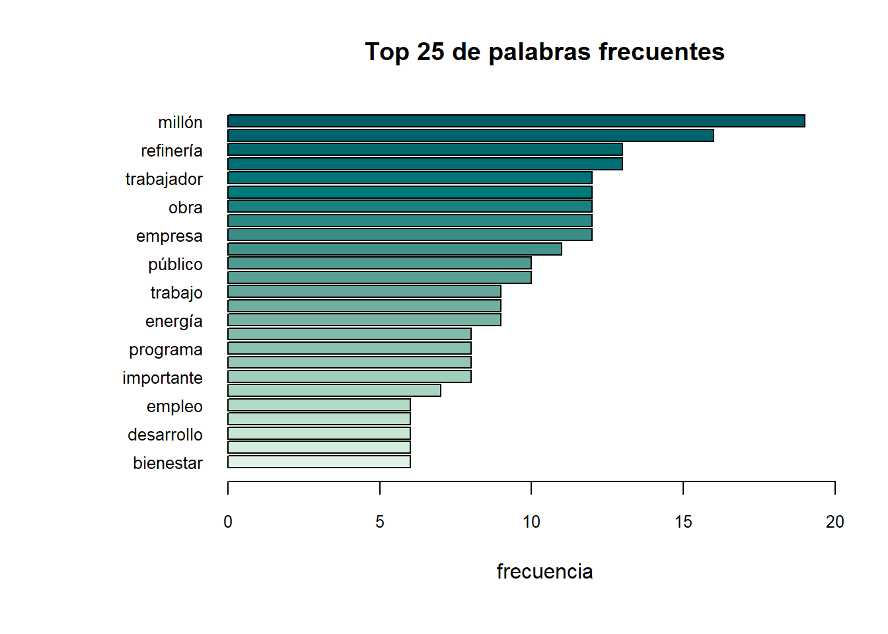

#remotes::install_github("agusnieto77/ACEP")T5: Análisis de texto (II)
En esta segunda práctica veremos más análisis sobre los tokens y palabras.
Paquetes
Instalamos este paquete que está en español:
if (!require("pacman")) install.packages("pacman") # instala pacman si se requiereLoading required package: pacmanpacman::p_load(tidyverse, magrittr, tidytext,
tm,
NLP, SnowballC,
wordcloud, ggwordcloud,
quanteda, udpipe,
igraph, ggraph, # para unos gráficos
readxl, janitor, textrank,
broom, epubr, pdftools, tesseract, tokenizers,
ACEP,
rvest)En esta práctica empezaremos a avanzar en el análisis de texto, encontrando palabras claves, separando sujetos y acciiones y correlación entre palabras
Datos
amlo1 <- readLines("text/20220107_amlo.txt")
count1<-tokenizers::count_words(amlo1)
amlo1<-amlo1[!count1==0]
amlo2 <- readLines("text/20220916_amlo.txt")
count2<-tokenizers::count_words(amlo2)
amlo2<-amlo2[!count2==0] Para {tidytext}
amlo1_df <-tibble(text=amlo1)
amlo2_df <-tibble(text=amlo2)
stop<-quanteda::stopwords(language="spa")Para {udpipe}, si no hemos descargado:
udmodel <- udpipe::udpipe_download_model(language = "spanish") # esto trabaja con la estructura del españolDownloading udpipe model from https://raw.githubusercontent.com/jwijffels/udpipe.models.ud.2.5/master/inst/udpipe-ud-2.5-191206/spanish-gsd-ud-2.5-191206.udpipe to /Users/anaescoto/Dropbox/2023/PAPIME2023/demos/spanish-gsd-ud-2.5-191206.udpipe - This model has been trained on version 2.5 of data from https://universaldependencies.org - The model is distributed under the CC-BY-SA-NC license: https://creativecommons.org/licenses/by-nc-sa/4.0 - Visit https://github.com/jwijffels/udpipe.models.ud.2.5 for model license details. - For a list of all models and their licenses (most models you can download with this package have either a CC-BY-SA or a CC-BY-SA-NC license) read the documentation at ?udpipe_download_model. For building your own models: visit the documentation by typing vignette('udpipe-train', package = 'udpipe')Downloading finished, model stored at '/Users/anaescoto/Dropbox/2023/PAPIME2023/demos/spanish-gsd-ud-2.5-191206.udpipe'amlo1_udpipe <- udpipe::udpipe(x = amlo1,
object = udmodel) #"tokeniza" el texto
amlo2_udpipe<-udpipe::udpipe(x = amlo2,
object = udmodel) #"tokeniza" el textoAsociación entre palabras
Con {tidytext}
Vamos a primero a utilizar otras funciones de {tidytext}
amlo_bigrams <- amlo1_df %>%
tidytext::unnest_tokens(bigram, text, token = "ngrams", n = 2) %>%
filter(!is.na(bigram))Como vemos tenemos el problema de las “stop”
bigrams_separado<- amlo_bigrams %>%
tidyr::separate(bigram, c("word1", "word2"), sep = " ")
bigrams_filtrado <- bigrams_separado %>%
filter(!word1 %in% stop) %>%
filter(!word2 %in% stop)
# new bigram counts:
bigram_conteo <- bigrams_filtrado %>%
count(word1, word2, sort = TRUE)
bigram_conteo# A tibble: 600 × 3
word1 word2 n
<chr> <chr> <int>
1 comisión federal 6
2 inversión extranjera 4
3 500 mil 3
4 desarrollo nacional 3
5 inversión pública 3
6 mercado interno 3
7 mil 500 3
8 mil barriles 3
9 millones 500 3
10 tren maya 3
# ℹ 590 more rowsbigram_conteo# A tibble: 600 × 3
word1 word2 n
<chr> <chr> <int>
1 comisión federal 6
2 inversión extranjera 4
3 500 mil 3
4 desarrollo nacional 3
5 inversión pública 3
6 mercado interno 3
7 mil 500 3
8 mil barriles 3
9 millones 500 3
10 tren maya 3
# ℹ 590 more rowsbigram_grafo<- bigram_conteo %>%
filter(n > 1) %>%
igraph::graph_from_data_frame()
bigram_grafoIGRAPH 4827cb4 DN-- 65 41 --
+ attr: name (v/c), n (e/n)
+ edges from 4827cb4 (vertex names):
[1] comisión ->federal inversión ->extranjera
[3] 500 ->mil desarrollo ->nacional
[5] inversión ->pública mercado ->interno
[7] mil ->500 mil ->barriles
[9] millones ->500 tren ->maya
[11] 100 ->mil 2 ->mil
[13] 3 ->millones 68 ->mil
[15] adultos ->mayores barriles ->diarios
+ ... omitted several edgesEsto ya nos permite hacer un poco análisis de redes:
set.seed(2017)
# ggraph::ggraph(bigram_grafo, layout = "fr") +
# geom_edge_link() +
# geom_node_point() +
# geom_node_text(aes(label = name), vjust = 1, hjust = 1)# ggraph(bigram_grafo, layout = "fr") +
# geom_edge_link(aes(width = n, edge_alpha = n), edge_colour = "pink") +
# geom_node_text(aes(label = name), col = "darkgreen", size = 4) +
# theme_graph(base_family = "Arial Narrow") +
# theme(legend.position = "none") +
# labs(title = "Cooccurrencias")Con {udpipe}
amlo_filtro<-amlo1_udpipe %>%
filter(upos==c("NOUN", "ADJ")) # vamos a ver relaciones entre adjetivos y nombres
cooc<-cooccurrence(x=amlo_filtro,
term = "lemma", #checa que trabajaremos con los lemmas
group = c("doc_id", "paragraph_id", "sentence_id"))Vamos a hacer el gráfico parecido al anterior:
cooc term1 term2 cooc
1 inversión privado 6
2 inversión millón 5
3 empleo estado 4
4 dólar inversión 4
5 extranjero inversión 4
6 dólar millón 4
7 inversión público 4
8 empleo sureste 4
9 estado sureste 4
10 comisión empresa 3
11 comisión federal 3
12 empresa federal 3
13 importantísimo inversión 3
14 energía ley 3
15 inversión país 3
16 año periodo 3
17 energía planta 3
18 año primero 3
19 año refinería 3
20 barril refinería 3
21 costo refinería 3
22 diario refinería 3
23 igual refinería 3
24 mes refinería 3
25 energía renovable 3
26 amiga amigo 2
27 construcción economía 2
28 ejemplo empleo 2
29 apagado energía 2
30 banca energía 2
31 comisión energía 2
32 constitución energía 2
33 desarrollo energía 2
34 empresa energía 2
35 ejemplo estado 2
36 energía excusa 2
37 acuerdo extranjero 2
38 bue extranjero 2
39 cifra extranjero 2
40 dólar extranjero 2
41 bienestar familia 2
42 energía federal 2
43 diésel gasolina 2
44 extranjero histórico 2
45 acción importante 2
46 ejecución importante 2
47 importante institución 2
48 acuerdo inversión 2
49 bue inversión 2
50 cifra inversión 2
51 histórico inversión 2
52 energía limpio 2
53 lección mayor 2
54 interno mercado 2
55 anual millón 2
56 extranjero millón 2
57 importante millón 2
58 año mismo 2
59 desarrollo nacional 2
60 energía nacional 2
61 importante normativa 2
62 energía particular 2
63 año pasado 2
64 bienestar paz 2
65 desarrollo país 2
66 importante pensamiento 2
67 adulto pensión 2
68 año pensión 2
69 discapacidad pensión 2
70 humano pensión 2
71 mayor pensión 2
72 millón pensión 2
73 pensión persona 2
74 empresa petrolero 2
75 ley planta 2
76 importante política 2
77 energía preferencia 2
78 energía pretexto 2
79 energía prioridad 2
80 importantísimo privado 2
81 país privado 2
82 gente programa 2
83 millón programa 2
84 comisión público 2
85 empresa público 2
86 energía público 2
87 federal público 2
88 privado público 2
89 empresa refinería 2
90 millón reforestación 2
91 energía subsidio 2
92 energía subutilizado 2
93 ejemplo sureste 2
94 adecuado tiempo 2
95 definición tiempo 2
96 manejo tiempo 2
97 contento trabajador 2
98 ferrocarril vía 2
99 férreo vía 2
100 industrial vía 2
101 modernización vía 2
102 parque vía 2
103 puente vía 2
104 puerto vía 2
105 agropecuario agua 1
106 Aprovecho apoyo 1
107 actitud atrasado 1
108 alimentario autosuficiencia 1
109 apoyo avance 1
110 Precios ayuda 1
111 adulto año 1
112 apagado banca 1
113 año barril 1
114 adversario beneficio 1
115 Precios bienestar 1
116 anhelado bienestar 1
117 ayuda bienestar 1
118 amplio bordo 1
119 acuerdo bue 1
120 Precios campesino 1
121 ayuda campesino 1
122 bienestar campesino 1
123 alimentario campo 1
124 autosuficiencia campo 1
125 buen canto 1
126 buen caso 1
127 canto caso 1
128 capacidad caída 1
129 Imagínense chatarra 1
130 acuerdo cifra 1
131 bue cifra 1
132 actual circunstancia 1
133 buen colaborador 1
134 apoyo combate 1
135 apagado comisión 1
136 banca comisión 1
137 comercial compromiso 1
138 apoyo conjunto 1
139 combate conjunto 1
140 capacidad constante 1
141 caída constante 1
142 apagado constitución 1
143 banca constitución 1
144 comisión constitución 1
145 agropecuario construcción 1
146 agua construcción 1
147 construcción constructivo 1
148 capacidad consumidor 1
149 agropecuario consumo 1
150 agua consumo 1
151 construcción consumo 1
152 construcción coquizadora 1
153 cierto costa 1
154 año costo 1
155 barril costo 1
156 combustible crudo 1
157 adecuado definición 1
158 corrupción deliberado 1
159 causa delincuencia 1
160 buen demanda 1
161 causa demanda 1
162 delincuencia demanda 1
163 actividad democrático 1
164 antepasado democrático 1
165 apoyo derecho 1
166 combate derecho 1
167 conjunto derecho 1
168 agropecuario desarrollo 1
169 agua desarrollo 1
170 apagado desarrollo 1
171 banca desarrollo 1
172 capital desarrollo 1
173 combustible desarrollo 1
174 comercial desarrollo 1
175 comisión desarrollo 1
176 compromiso desarrollo 1
177 constitución desarrollo 1
178 construcción desarrollo 1
179 consumo desarrollo 1
180 año diario 1
181 barril diario 1
182 costo diario 1
183 bienestar directo 1
184 ayuda dirigente 1
185 adulto discapacidad 1
186 año discapacidad 1
187 agropecuario disponibilidad 1
188 agua disponibilidad 1
189 construcción disponibilidad 1
190 consumo disponibilidad 1
191 desarrollo disponibilidad 1
192 aumento diésel 1
193 capacidad doble 1
194 caída doble 1
195 constante doble 1
196 disminución doloso 1
197 agropecuario doméstico 1
198 agua doméstico 1
199 capacidad doméstico 1
200 construcción doméstico 1
201 consumidor doméstico 1
202 consumo doméstico 1
203 desarrollo doméstico 1
204 disponibilidad doméstico 1
205 amplio dragado 1
206 bordo dragado 1
207 conciencia duradero 1
208 acuerdo dólar 1
209 anual dólar 1
210 bue dólar 1
211 cifra dólar 1
212 construcción dólar 1
213 constructivo economía 1
214 comercial económico 1
215 compromiso económico 1
216 desarrollo económico 1
217 causa educativo 1
218 delincuencia educativo 1
219 demanda educativo 1
220 Aprovecho efectivo 1
221 apoyo efectivo 1
222 cargo efecto 1
223 acción ejecución 1
224 comisión eléctrico 1
225 capacidad embargo 1
226 consumidor embargo 1
227 doméstico embargo 1
228 coquizadora empleo 1
229 apagado empresa 1
230 banca empresa 1
231 circunstancia empresa 1
232 constitución empresa 1
233 desarrollo empresa 1
234 director empresa 1
235 eléctrico empresa 1
236 conciencia empuje 1
237 duradero empuje 1
238 alimentario energético 1
239 autosuficiencia energético 1
240 campo energético 1
241 buen energía 1
242 canto energía 1
243 capacidad energía 1
244 caso energía 1
245 consumidor energía 1
246 doméstico energía 1
247 embargo energía 1
248 contenido escuela 1
249 causa espacio 1
250 delincuencia espacio 1
251 demanda espacio 1
252 educativo espacio 1
253 circunstancia especial 1
254 empresa especial 1
255 compromiso especialista 1
256 alimentario estratégico 1
257 autosuficiencia estratégico 1
258 campo estratégico 1
259 energético estratégico 1
260 construcción etapa 1
261 constructivo etapa 1
262 economía etapa 1
263 Aprovecho excepcional 1
264 apoyo excepcional 1
265 efectivo excepcional 1
266 apagado excusa 1
267 banca excusa 1
268 comisión excusa 1
269 constitución excusa 1
270 desarrollo excusa 1
271 empresa excusa 1
272 capacidad exploración 1
273 caída exploración 1
274 constante exploración 1
275 doble exploración 1
276 cumbre exteriores 1
277 capacidad extracción 1
278 caída extracción 1
279 constante extracción 1
280 doble extracción 1
281 exploración extracción 1
282 comisión extranjero 1
283 decisión extranjero 1
284 diésel extranjero 1
285 eléctrico extranjero 1
286 empresa extranjero 1
287 causa falta 1
288 delincuencia falta 1
289 demanda falta 1
290 educativo falta 1
291 espacio falta 1
292 Precios familia 1
293 ayuda familia 1
294 campesino familia 1
295 cierto familia 1
296 contenido familia 1
297 costa familia 1
298 directo familia 1
299 escuela familia 1
300 buen fe 1
301 canto fe 1
302 caso fe 1
303 energía fe 1
304 apagado federal 1
305 banca federal 1
306 constitución federal 1
307 delito federal 1
308 desarrollo federal 1
309 eléctrico federal 1
310 excusa federal 1
311 extranjero federal 1
312 Precios fertilizante 1
313 ayuda fertilizante 1
314 bienestar fertilizante 1
315 campesino fertilizante 1
316 familia fertilizante 1
317 capacidad forma 1
318 consumidor forma 1
319 doméstico forma 1
320 embargo forma 1
321 energía forma 1
322 apoyo fraterno 1
323 delito fuero 1
324 federal fuero 1
325 actual fundamental 1
326 capital fundamental 1
327 circunstancia fundamental 1
328 desarrollo fundamental 1
329 ferrocarril férreo 1
330 extranjero gasolina 1
331 compromiso general 1
332 especialista general 1
333 amplio gente 1
334 bordo gente 1
335 conciencia gente 1
336 dragado gente 1
337 duradero gente 1
338 empuje gente 1
339 actividad gobierno 1
340 adversario gobierno 1
341 aeropuerto gobierno 1
342 beneficio gobierno 1
343 delito gobierno 1
344 democrático gobierno 1
345 derecho gobierno 1
346 escritorio gobierno 1
347 federal gobierno 1
348 fuero gobierno 1
349 campesino grandeza 1
350 derecho gratuito 1
351 gobierno gratuito 1
352 buen gravedad 1
353 adversario grupo 1
354 beneficio grupo 1
355 gobierno grupo 1
356 empresa gusto 1
357 canal hectárea 1
358 agropecuario hidráulico 1
359 agua hidráulico 1
360 construcción hidráulico 1
361 consumo hidráulico 1
362 desarrollo hidráulico 1
363 disponibilidad hidráulico 1
364 doméstico hidráulico 1
365 gran historia 1
366 acuerdo histórico 1
367 bue histórico 1
368 cifra histórico 1
369 dólar histórico 1
370 disminución homicidio 1
371 doloso homicidio 1
372 adulto humano 1
373 apoyo humano 1
374 año humano 1
375 combate humano 1
376 conjunto humano 1
377 derecho humano 1
378 discapacidad humano 1
379 gasto humano 1
380 apego ideal 1
381 año igual 1
382 barril igual 1
383 costo igual 1
384 diario igual 1
385 adversario importante 1
386 anual importante 1
387 apoyo importante 1
388 beneficio importante 1
389 causa importante 1
390 combate importante 1
391 conjunto importante 1
392 delincuencia importante 1
393 demanda importante 1
394 derecho importante 1
395 dólar importante 1
396 educativo importante 1
397 espacio importante 1
398 falta importante 1
399 gobierno importante 1
400 grupo importante 1
401 humano importante 1
402 causa impostergable 1
403 delincuencia impostergable 1
404 demanda impostergable 1
405 educativo impostergable 1
406 espacio impostergable 1
407 falta impostergable 1
408 importante impostergable 1
409 causa impunidad 1
410 corrupción impunidad 1
411 delincuencia impunidad 1
412 demanda impunidad 1
413 educativo impunidad 1
414 espacio impunidad 1
415 falta impunidad 1
416 importante impunidad 1
417 impostergable impunidad 1
418 construcción inauguración 1
419 coquizadora inauguración 1
420 apego incongruente 1
421 ideal incongruente 1
422 alimentario indispensable 1
423 apoyo indispensable 1
424 autosuficiencia indispensable 1
425 campo indispensable 1
426 energético indispensable 1
427 estratégico indispensable 1
428 fraterno indispensable 1
429 comisión industria 1
430 eléctrico industria 1
431 empresa industria 1
432 extranjero industria 1
433 federal industria 1
434 ferrocarril industrial 1
435 férreo industrial 1
436 gran infamia 1
437 historia infamia 1
438 actual inflación 1
439 circunstancia inflación 1
440 fundamental inflación 1
441 comisión influencia 1
442 eléctrico influencia 1
443 empresa influencia 1
444 extranjero influencia 1
445 federal influencia 1
446 industria influencia 1
447 industria informal 1
448 inflacionario ingreso 1
449 distintivo inicio 1
450 acción institución 1
451 ejecución institución 1
452 combustible interno 1
453 desarrollo interno 1
454 industria interno 1
455 informal interno 1
456 amplio inundación 1
457 bordo inundación 1
458 dragado inundación 1
459 gente inundación 1
460 Imagínense inversión 1
461 anual inversión 1
462 chatarra inversión 1
463 construcción inversión 1
464 gasto inversión 1
465 humano inversión 1
466 importante inversión 1
467 especial invitado 1
468 económico jornal 1
469 causa joven 1
470 delincuencia joven 1
471 demanda joven 1
472 educativo joven 1
473 espacio joven 1
474 falta joven 1
475 importante joven 1
476 impostergable joven 1
477 impunidad joven 1
478 comercial junto 1
479 compromiso junto 1
480 desarrollo junto 1
481 económico junto 1
482 causa justo 1
483 delincuencia justo 1
484 demanda justo 1
485 educativo justo 1
486 espacio justo 1
487 falta justo 1
488 importante justo 1
489 impostergable justo 1
490 impunidad justo 1
491 joven justo 1
492 ferrocarril kilómetro 1
493 causa laboral 1
494 delincuencia laboral 1
495 demanda laboral 1
496 educativo laboral 1
497 espacio laboral 1
498 falta laboral 1
499 importante laboral 1
500 impostergable laboral 1
501 impunidad laboral 1
502 joven laboral 1
503 justo laboral 1
504 alimentario lección 1
505 autosuficiencia lección 1
506 campo lección 1
507 energético lección 1
508 enseñanza lección 1
509 estratégico lección 1
510 indispensable lección 1
511 apagado ley 1
512 banca ley 1
513 capacidad ley 1
514 comisión ley 1
515 constitución ley 1
516 consumidor ley 1
517 desarrollo ley 1
518 doméstico ley 1
519 embargo ley 1
520 empresa ley 1
521 excusa ley 1
522 federal ley 1
523 forma ley 1
524 actividad libertad 1
525 democrático libertad 1
526 gobierno libertad 1
527 apagado limpio 1
528 banca limpio 1
529 comisión limpio 1
530 constitución limpio 1
531 desarrollo limpio 1
532 empresa limpio 1
533 excusa limpio 1
534 federal limpio 1
535 ley limpio 1
536 contenido madre 1
537 escuela madre 1
538 familia madre 1
539 decisión malo 1
540 extranjero malo 1
541 adecuado manejo 1
542 definición manejo 1
543 bienestar manera 1
544 corrupción manera 1
545 deliberado manera 1
546 directo manera 1
547 disminución manera 1
548 doloso manera 1
549 familia manera 1
550 homicidio manera 1
551 capacidad manifiesto 1
552 consumidor manifiesto 1
553 doméstico manifiesto 1
554 embargo manifiesto 1
555 energía manifiesto 1
556 forma manifiesto 1
557 ley manifiesto 1
558 buen mano 1
559 demanda mano 1
560 contenido mantenimiento 1
561 escuela mantenimiento 1
562 familia mantenimiento 1
563 madre mantenimiento 1
564 adulto mayor 1
565 alimentario mayor 1
566 autosuficiencia mayor 1
567 año mayor 1
568 campo mayor 1
569 discapacidad mayor 1
570 energético mayor 1
571 enseñanza mayor 1
572 estratégico mayor 1
573 humano mayor 1
574 indispensable mayor 1
575 compromiso medicamento 1
576 especialista medicamento 1
577 general medicamento 1
578 decisión mejor 1
579 extranjero mejor 1
580 malo mejor 1
581 combustible mercado 1
582 desarrollo mercado 1
583 industria mercado 1
584 informal mercado 1
585 aeropuerto mes 1
586 aumento mes 1
587 año mes 1
588 barril mes 1
589 costo mes 1
590 diario mes 1
591 diésel mes 1
592 gobierno mes 1
593 igual mes 1
594 aumento mexicano 1
595 diésel mexicano 1
596 mes mexicano 1
597 aumento mezcla 1
598 diésel mezcla 1
599 mes mezcla 1
600 mexicano mezcla 1
601 apoyo migración 1
602 combate migración 1
603 conjunto migración 1
604 derecho migración 1
605 humano migración 1
606 importante migración 1
607 ingeniero militar 1
608 acuerdo millón 1
609 adulto millón 1
610 año millón 1
611 bienestar millón 1
612 bue millón 1
613 cifra millón 1
614 construcción millón 1
615 directo millón 1
616 discapacidad millón 1
617 familia millón 1
618 histórico millón 1
619 humano millón 1
620 legal millón 1
621 manera millón 1
622 mayor millón 1
623 meta millón 1
624 construcción mismo 1
625 constructivo mismo 1
626 economía mismo 1
627 etapa mismo 1
628 inflacionario mismo 1
629 ingreso mismo 1
630 gasolina mitad 1
631 enseñanza modelo 1
632 lección modelo 1
633 mayor modelo 1
634 ferrocarril modernización 1
635 férreo modernización 1
636 industrial modernización 1
637 apego modo 1
638 ideal modo 1
639 incongruente modo 1
640 decisión momento 1
641 extranjero momento 1
642 malo momento 1
643 mejor momento 1
644 crisis moneda 1
645 conciencia moral 1
646 duradero moral 1
647 empuje moral 1
648 gente moral 1
649 antepasado movimiento 1
650 democrático movimiento 1
651 gobierno mundo 1
652 buen médico 1
653 compromiso médico 1
654 especialista médico 1
655 general médico 1
656 gravedad médico 1
657 medicamento médico 1
658 apagado nacional 1
659 banca nacional 1
660 combustible nacional 1
661 comisión nacional 1
662 constitución nacional 1
663 corrupción nacional 1
664 deliberado nacional 1
665 empresa nacional 1
666 excusa nacional 1
667 federal nacional 1
668 interno nacional 1
669 ley nacional 1
670 limpio nacional 1
671 manera nacional 1
672 mercado nacional 1
673 capacidad nación 1
674 consumidor nación 1
675 doméstico nación 1
676 embargo nación 1
677 energía nación 1
678 forma nación 1
679 ley nación 1
680 manifiesto nación 1
681 causa necesidad 1
682 delincuencia necesidad 1
683 demanda necesidad 1
684 educativo necesidad 1
685 espacio necesidad 1
686 falta necesidad 1
687 importante necesidad 1
688 impostergable necesidad 1
689 impunidad necesidad 1
690 joven necesidad 1
691 justo necesidad 1
692 laboral necesidad 1
693 anhelado necesitado 1
694 bienestar necesitado 1
695 corrupción negocio 1
696 impunidad negocio 1
697 año neoliberal 1
698 enseñanza neoliberal 1
699 lección neoliberal 1
700 mayor neoliberal 1
701 modelo neoliberal 1
702 año neoporfirista 1
703 neoliberal neoporfirista 1
704 construcción noble 1
705 constructivo noble 1
706 economía noble 1
707 etapa noble 1
708 mismo noble 1
709 acción normativa 1
710 ejecución normativa 1
711 institución normativa 1
712 buen noticia 1
713 demanda noticia 1
714 mano noticia 1
715 actividad nuevo 1
716 construcción nuevo 1
717 democrático nuevo 1
718 economía nuevo 1
719 gobierno nuevo 1
720 libertad nuevo 1
721 causa obligado 1
722 delincuencia obligado 1
723 demanda obligado 1
724 educativo obligado 1
725 espacio obligado 1
726 falta obligado 1
727 importante obligado 1
728 impostergable obligado 1
729 impunidad obligado 1
730 joven obligado 1
731 justo obligado 1
732 laboral obligado 1
733 necesidad obligado 1
734 agropecuario obra 1
735 agua obra 1
736 buen obra 1
737 construcción obra 1
738 consumo obra 1
739 demanda obra 1
740 desarrollo obra 1
741 disponibilidad obra 1
742 doméstico obra 1
743 empresa obra 1
744 gusto obra 1
745 hidráulico obra 1
746 mano obra 1
747 noticia obra 1
748 Aprovecho oficial 1
749 apoyo oficial 1
750 efectivo oficial 1
751 excepcional oficial 1
752 austero orgullo 1
753 decisión orgullo 1
754 extranjero orgullo 1
755 malo orgullo 1
756 mejor orgullo 1
757 momento orgullo 1
758 buen original 1
759 gravedad original 1
760 médico original 1
761 conciencia pacífico 1
762 duradero pacífico 1
763 empuje pacífico 1
764 gente pacífico 1
765 moral pacífico 1
766 contenido padre 1
767 escuela padre 1
768 familia padre 1
769 madre padre 1
770 mantenimiento padre 1
771 buen palabra 1
772 canto palabra 1
773 caso palabra 1
774 energía palabra 1
775 fe palabra 1
776 actual pandemia 1
777 buen pandemia 1
778 circunstancia pandemia 1
779 crisis pandemia 1
780 fundamental pandemia 1
781 gravedad pandemia 1
782 inflación pandemia 1
783 moneda pandemia 1
784 médico pandemia 1
785 original pandemia 1
786 construcción parada 1
787 dólar parada 1
788 inversión parada 1
789 millón parada 1
790 ecológico parque 1
791 ferrocarril parque 1
792 férreo parque 1
793 industrial parque 1
794 modernización parque 1
795 director parte 1
796 empresa parte 1
797 apagado particular 1
798 banca particular 1
799 comisión particular 1
800 constitución particular 1
801 desarrollo particular 1
802 empresa particular 1
803 excusa particular 1
804 federal particular 1
805 ley particular 1
806 limpio particular 1
807 nacional particular 1
808 mismo pasado 1
809 ferrocarril pasajero 1
810 kilómetro pasajero 1
811 director patrimonio 1
812 empresa patrimonio 1
813 parte patrimonio 1
814 anhelado paz 1
815 necesitado paz 1
816 alimentario país 1
817 apoyo país 1
818 autosuficiencia país 1
819 campo país 1
820 capital país 1
821 combate país 1
822 combustible país 1
823 conjunto país 1
824 decisión país 1
825 derecho país 1
826 energético país 1
827 estratégico país 1
828 extranjero país 1
829 ferrocarril país 1
830 fundamental país 1
831 gobierno país 1
832 humano país 1
833 importante país 1
834 importantísimo país 1
835 indispensable país 1
836 integración país 1
837 interno país 1
838 kilómetro país 1
839 lección país 1
840 malo país 1
841 mayor país 1
842 mejor país 1
843 mercado país 1
844 migración país 1
845 momento país 1
846 mundo país 1
847 nacional país 1
848 orgullo país 1
849 pasajero país 1
850 acción pensamiento 1
851 ejecución pensamiento 1
852 institución pensamiento 1
853 normativa pensamiento 1
854 decisión periodo 1
855 distintivo periodo 1
856 extranjero periodo 1
857 inicio periodo 1
858 malo periodo 1
859 mejor periodo 1
860 mismo periodo 1
861 momento periodo 1
862 neoliberal periodo 1
863 neoporfirista periodo 1
864 orgullo periodo 1
865 pasado periodo 1
866 país periodo 1
867 adulto persona 1
868 año persona 1
869 discapacidad persona 1
870 humano persona 1
871 mayor persona 1
872 millón persona 1
873 Precios pescador 1
874 ayuda pescador 1
875 bienestar pescador 1
876 campesino pescador 1
877 familia pescador 1
878 fertilizante pescador 1
879 legal peso 1
880 millón peso 1
881 circunstancia petrolero 1
882 director petrolero 1
883 especial petrolero 1
884 parte petrolero 1
885 patrimonio petrolero 1
886 buen petróleo 1
887 canto petróleo 1
888 capacidad petróleo 1
889 caso petróleo 1
890 caída petróleo 1
891 combustible petróleo 1
892 constante petróleo 1
893 crudo petróleo 1
894 doble petróleo 1
895 energía petróleo 1
896 exploración petróleo 1
897 extracción petróleo 1
898 fe petróleo 1
899 palabra petróleo 1
900 apoyo plan 1
901 combate plan 1
902 conjunto plan 1
903 derecho plan 1
904 humano plan 1
905 importante plan 1
906 migración plan 1
907 país plan 1
908 apagado planta 1
909 banca planta 1
910 capacidad planta 1
911 comisión planta 1
912 constitución planta 1
913 consumidor planta 1
914 desarrollo planta 1
915 doméstico planta 1
916 embargo planta 1
917 empresa planta 1
918 excusa planta 1
919 federal planta 1
920 forma planta 1
921 limpio planta 1
922 manifiesto planta 1
923 nacional planta 1
924 nación planta 1
925 particular planta 1
926 justicia población 1
927 gasto pobreza 1
928 humano pobreza 1
929 inversión pobreza 1
930 adversario poderoso 1
931 beneficio poderoso 1
932 gobierno poderoso 1
933 grupo poderoso 1
934 importante poderoso 1
935 acción política 1
936 ejecución política 1
937 institución política 1
938 normativa política 1
939 pensamiento política 1
940 causa popular 1
941 delincuencia popular 1
942 demanda popular 1
943 educativo popular 1
944 espacio popular 1
945 falta popular 1
946 importante popular 1
947 impostergable popular 1
948 impunidad popular 1
949 joven popular 1
950 justo popular 1
951 laboral popular 1
952 necesidad popular 1
953 obligado popular 1
954 nivel posgrado 1
955 conciencia posible 1
956 duradero posible 1
957 empuje posible 1
958 gente posible 1
959 moral posible 1
960 pacífico posible 1
961 aumento precio 1
962 diésel precio 1
963 mes precio 1
964 mexicano precio 1
965 mezcla precio 1
966 antepasado precursor 1
967 democrático precursor 1
968 movimiento precursor 1
969 nivel preescolar 1
970 posgrado preescolar 1
971 apagado preferencia 1
972 banca preferencia 1
973 comisión preferencia 1
974 constitución preferencia 1
975 desarrollo preferencia 1
976 empresa preferencia 1
977 excusa preferencia 1
978 federal preferencia 1
979 ley preferencia 1
980 limpio preferencia 1
981 nacional preferencia 1
982 particular preferencia 1
983 planta preferencia 1
984 elección presidencial 1
985 municipal presidenta 1
986 apagado pretexto 1
987 banca pretexto 1
988 comisión pretexto 1
989 constitución pretexto 1
990 desarrollo pretexto 1
991 empresa pretexto 1
992 excusa pretexto 1
993 federal pretexto 1
994 ley pretexto 1
995 limpio pretexto 1
996 nacional pretexto 1
997 particular pretexto 1
998 planta pretexto 1
999 preferencia pretexto 1
1000 mismo primero 1
1001 pasado primero 1
1002 periodo primero 1
1003 apego principio 1
1004 ideal principio 1
1005 incongruente principio 1
1006 modo principio 1
1007 anhelado prioridad 1
1008 apagado prioridad 1
1009 banca prioridad 1
1010 bienestar prioridad 1
1011 comisión prioridad 1
1012 constitución prioridad 1
1013 desarrollo prioridad 1
1014 empresa prioridad 1
1015 excusa prioridad 1
1016 federal prioridad 1
1017 ley prioridad 1
1018 limpio prioridad 1
1019 nacional prioridad 1
1020 necesitado prioridad 1
1021 particular prioridad 1
1022 paz prioridad 1
1023 planta prioridad 1
1024 preferencia prioridad 1
1025 pretexto prioridad 1
1026 inseguridad privilegio 1
1027 escritorio problema 1
1028 gobierno problema 1
1029 inflacionario problema 1
1030 ingreso problema 1
1031 mismo problema 1
1032 capacidad productivo 1
1033 caída productivo 1
1034 constante productivo 1
1035 doble productivo 1
1036 exploración productivo 1
1037 extracción productivo 1
1038 petróleo productivo 1
1039 empresa profesionalismo 1
1040 gusto profesionalismo 1
1041 obra profesionalismo 1
1042 amplio programa 1
1043 anual programa 1
1044 bordo programa 1
1045 conciencia programa 1
1046 dragado programa 1
1047 duradero programa 1
1048 dólar programa 1
1049 empuje programa 1
1050 importante programa 1
1051 inundación programa 1
1052 inversión programa 1
1053 moral programa 1
1054 obra programa 1
1055 pacífico programa 1
1056 posible programa 1
1057 adversario propio 1
1058 beneficio propio 1
1059 comisión propio 1
1060 eléctrico propio 1
1061 empresa propio 1
1062 extranjero propio 1
1063 federal propio 1
1064 gobierno propio 1
1065 grupo propio 1
1066 importante propio 1
1067 industria propio 1
1068 influencia propio 1
1069 poderoso propio 1
1070 anhelado propósito 1
1071 bienestar propósito 1
1072 necesitado propósito 1
1073 paz propósito 1
1074 prioridad propósito 1
1075 antepasado protagonista 1
1076 democrático protagonista 1
1077 movimiento protagonista 1
1078 precursor protagonista 1
1079 distintivo prueba 1
1080 inicio prueba 1
1081 periodo prueba 1
1082 apoyo pueblo 1
1083 causa pueblo 1
1084 delincuencia pueblo 1
1085 demanda pueblo 1
1086 educativo pueblo 1
1087 espacio pueblo 1
1088 falta pueblo 1
1089 felicidad pueblo 1
1090 fraterno pueblo 1
1091 gobierno pueblo 1
1092 importante pueblo 1
1093 impostergable pueblo 1
1094 impunidad pueblo 1
1095 indispensable pueblo 1
1096 joven pueblo 1
1097 justo pueblo 1
1098 laboral pueblo 1
1099 mundo pueblo 1
1100 necesidad pueblo 1
1101 obligado pueblo 1
1102 país pueblo 1
1103 popular pueblo 1
1104 ferrocarril puente 1
1105 férreo puente 1
1106 industrial puente 1
1107 modernización puente 1
1108 parque puente 1
1109 ferrocarril puerto 1
1110 férreo puerto 1
1111 industrial puerto 1
1112 modernización puerto 1
1113 parque puerto 1
1114 puente puerto 1
1115 Imagínense público 1
1116 apagado público 1
1117 banca público 1
1118 buen público 1
1119 chatarra público 1
1120 constitución público 1
1121 desarrollo público 1
1122 excusa público 1
1123 gravedad público 1
1124 importantísimo público 1
1125 intermediario público 1
1126 ley público 1
1127 limpio público 1
1128 médico público 1
1129 nacional público 1
1130 original público 1
1131 pandemia público 1
1132 particular público 1
1133 país público 1
1134 planta público 1
1135 preferencia público 1
1136 pretexto público 1
1137 prioridad público 1
1138 apoyo razón 1
1139 fraterno razón 1
1140 indispensable razón 1
1141 pueblo razón 1
1142 amplio reconocimiento 1
1143 austero reconocimiento 1
1144 bordo reconocimiento 1
1145 dragado reconocimiento 1
1146 gente reconocimiento 1
1147 inundación reconocimiento 1
1148 orgullo reconocimiento 1
1149 programa reconocimiento 1
1150 económico recurso 1
1151 jornal recurso 1
1152 natural recurso 1
1153 cargo refinería 1
1154 director refinería 1
1155 efecto refinería 1
1156 gusto refinería 1
1157 obra refinería 1
1158 parte refinería 1
1159 patrimonio refinería 1
1160 petrolero refinería 1
1161 profesionalismo refinería 1
1162 anual reforestación 1
1163 dólar reforestación 1
1164 importante reforestación 1
1165 inversión reforestación 1
1166 país reforestación 1
1167 programa reforestación 1
1168 legal reforma 1
1169 millón reforma 1
1170 peso reforma 1
1171 claro regla 1
1172 frontera rehabilitación 1
1173 cumbre relaciones 1
1174 exteriores relaciones 1
1175 gobierno relación 1
1176 mundo relación 1
1177 país relación 1
1178 pueblo relación 1
1179 apagado renovable 1
1180 banca renovable 1
1181 buen renovable 1
1182 canto renovable 1
1183 caso renovable 1
1184 comisión renovable 1
1185 constitución renovable 1
1186 desarrollo renovable 1
1187 empresa renovable 1
1188 excusa renovable 1
1189 fe renovable 1
1190 federal renovable 1
1191 ley renovable 1
1192 limpio renovable 1
1193 nacional renovable 1
1194 palabra renovable 1
1195 particular renovable 1
1196 petróleo renovable 1
1197 planta renovable 1
1198 preferencia renovable 1
1199 pretexto renovable 1
1200 prioridad renovable 1
1201 público renovable 1
1202 legal reparto 1
1203 millón reparto 1
1204 peso reparto 1
1205 reforma reparto 1
1206 gasto repito 1
1207 humano repito 1
1208 inversión repito 1
1209 pobreza repito 1
1210 comisión rescate 1
1211 empresa rescate 1
1212 federal rescate 1
1213 público rescate 1
1214 delito respecto 1
1215 federal respecto 1
1216 fuero respecto 1
1217 gobierno respecto 1
1218 integración respeto 1
1219 país respeto 1
1220 obra responsable 1
1221 inflacionario resultado 1
1222 ingreso resultado 1
1223 mismo resultado 1
1224 problema resultado 1
1225 conciencia revolución 1
1226 duradero revolución 1
1227 empuje revolución 1
1228 gente revolución 1
1229 moral revolución 1
1230 pacífico revolución 1
1231 posible revolución 1
1232 programa revolución 1
1233 canal riego 1
1234 hectárea riego 1
1235 fruto riqueza 1
1236 amplio río 1
1237 bordo río 1
1238 dragado río 1
1239 gente río 1
1240 inundación río 1
1241 programa río 1
1242 reconocimiento río 1
1243 promedio salario 1
1244 buen salud 1
1245 derecho salud 1
1246 gobierno salud 1
1247 gratuito salud 1
1248 gravedad salud 1
1249 médico salud 1
1250 original salud 1
1251 pandemia salud 1
1252 público salud 1
1253 cumbre secretario 1
1254 exteriores secretario 1
1255 relaciones secretario 1
1256 capacidad secretaría 1
1257 consumidor secretaría 1
1258 doméstico secretaría 1
1259 embargo secretaría 1
1260 energía secretaría 1
1261 forma secretaría 1
1262 ley secretaría 1
1263 manifiesto secretaría 1
1264 nación secretaría 1
1265 planta secretaría 1
1266 causa seguro 1
1267 delincuencia seguro 1
1268 demanda seguro 1
1269 educativo seguro 1
1270 espacio seguro 1
1271 falta seguro 1
1272 importante seguro 1
1273 impostergable seguro 1
1274 impunidad seguro 1
1275 joven seguro 1
1276 justo seguro 1
1277 laboral seguro 1
1278 necesidad seguro 1
1279 obligado seguro 1
1280 popular seguro 1
1281 promedio seguro 1
1282 pueblo seguro 1
1283 salario seguro 1
1284 buen ser 1
1285 canto ser 1
1286 caso ser 1
1287 energía ser 1
1288 fe ser 1
1289 palabra ser 1
1290 petróleo ser 1
1291 renovable ser 1
1292 intermediario servidor 1
1293 público servidor 1
1294 ayuda sindical 1
1295 dirigente sindical 1
1296 buen sistema 1
1297 canal sistema 1
1298 gravedad sistema 1
1299 hectárea sistema 1
1300 médico sistema 1
1301 original sistema 1
1302 pandemia sistema 1
1303 público sistema 1
1304 riego sistema 1
1305 salud sistema 1
1306 comercial social 1
1307 compromiso social 1
1308 conciencia social 1
1309 desarrollo social 1
1310 duradero social 1
1311 económico social 1
1312 empuje social 1
1313 gente social 1
1314 junto social 1
1315 moral social 1
1316 pacífico social 1
1317 posible social 1
1318 programa social 1
1319 promedio social 1
1320 revolución social 1
1321 salario social 1
1322 seguro social 1
1323 contenido sociedad 1
1324 escuela sociedad 1
1325 familia sociedad 1
1326 madre sociedad 1
1327 mantenimiento sociedad 1
1328 padre sociedad 1
1329 apoyo solidario 1
1330 fraterno solidario 1
1331 indispensable solidario 1
1332 pueblo solidario 1
1333 razón solidario 1
1334 apagado subsidio 1
1335 banca subsidio 1
1336 comisión subsidio 1
1337 constitución subsidio 1
1338 desarrollo subsidio 1
1339 empresa subsidio 1
1340 excusa subsidio 1
1341 federal subsidio 1
1342 ley subsidio 1
1343 limpio subsidio 1
1344 nacional subsidio 1
1345 particular subsidio 1
1346 planta subsidio 1
1347 preferencia subsidio 1
1348 pretexto subsidio 1
1349 prioridad subsidio 1
1350 público subsidio 1
1351 renovable subsidio 1
1352 apagado subutilizado 1
1353 banca subutilizado 1
1354 comisión subutilizado 1
1355 constitución subutilizado 1
1356 desarrollo subutilizado 1
1357 empresa subutilizado 1
1358 excusa subutilizado 1
1359 federal subutilizado 1
1360 ley subutilizado 1
1361 limpio subutilizado 1
1362 nacional subutilizado 1
1363 particular subutilizado 1
1364 planta subutilizado 1
1365 preferencia subutilizado 1
1366 pretexto subutilizado 1
1367 prioridad subutilizado 1
1368 público subutilizado 1
1369 renovable subutilizado 1
1370 subsidio subutilizado 1
1371 compromiso suficiente 1
1372 especialista suficiente 1
1373 general suficiente 1
1374 medicamento suficiente 1
1375 médico suficiente 1
1376 buen tal 1
1377 canto tal 1
1378 caso tal 1
1379 energía tal 1
1380 fe tal 1
1381 palabra tal 1
1382 petróleo tal 1
1383 renovable tal 1
1384 ser tal 1
1385 capacidad tarifa 1
1386 consumidor tarifa 1
1387 doméstico tarifa 1
1388 embargo tarifa 1
1389 energía tarifa 1
1390 forma tarifa 1
1391 ley tarifa 1
1392 manifiesto tarifa 1
1393 nación tarifa 1
1394 planta tarifa 1
1395 secretaría tarifa 1
1396 construcción tecnología 1
1397 economía tecnología 1
1398 nuevo tecnología 1
1399 apoyo tecnológico 1
1400 avance tecnológico 1
1401 apoyo tema 1
1402 combate tema 1
1403 conjunto tema 1
1404 derecho tema 1
1405 humano tema 1
1406 importante tema 1
1407 migración tema 1
1408 país tema 1
1409 plan tema 1
1410 bienestar temor 1
1411 paz temor 1
1412 apoyo temporal 1
1413 combate temporal 1
1414 conjunto temporal 1
1415 derecho temporal 1
1416 humano temporal 1
1417 importante temporal 1
1418 migración temporal 1
1419 país temporal 1
1420 plan temporal 1
1421 tema temporal 1
1422 apoyo temprano 1
1423 avance temprano 1
1424 tecnológico temprano 1
1425 disminución tendencia 1
1426 doloso tendencia 1
1427 escritorio tendencia 1
1428 gobierno tendencia 1
1429 homicidio tendencia 1
1430 manera tendencia 1
1431 problema tendencia 1
1432 escritorio territorio 1
1433 gobierno territorio 1
1434 problema territorio 1
1435 tendencia territorio 1
1436 capacidad tiempo 1
1437 caída tiempo 1
1438 constante tiempo 1
1439 construcción tiempo 1
1440 constructivo tiempo 1
1441 crisis tiempo 1
1442 diésel tiempo 1
1443 doble tiempo 1
1444 economía tiempo 1
1445 escritorio tiempo 1
1446 etapa tiempo 1
1447 exploración tiempo 1
1448 extracción tiempo 1
1449 extranjero tiempo 1
1450 gasolina tiempo 1
1451 gobierno tiempo 1
1452 gran tiempo 1
1453 historia tiempo 1
1454 infamia tiempo 1
1455 mismo tiempo 1
1456 modo tiempo 1
1457 moneda tiempo 1
1458 noble tiempo 1
1459 pandemia tiempo 1
1460 petróleo tiempo 1
1461 problema tiempo 1
1462 productivo tiempo 1
1463 tendencia tiempo 1
1464 territorio tiempo 1
1465 capital trabajador 1
1466 comisión trabajador 1
1467 desarrollo trabajador 1
1468 empresa trabajador 1
1469 federal trabajador 1
1470 fundamental trabajador 1
1471 industria trabajador 1
1472 informal trabajador 1
1473 interno trabajador 1
1474 legal trabajador 1
1475 mercado trabajador 1
1476 millón trabajador 1
1477 país trabajador 1
1478 peso trabajador 1
1479 público trabajador 1
1480 reforma trabajador 1
1481 reparto trabajador 1
1482 rescate trabajador 1
1483 amplio trabajo 1
1484 bordo trabajo 1
1485 dragado trabajo 1
1486 fruto trabajo 1
1487 gente trabajo 1
1488 inundación trabajo 1
1489 programa trabajo 1
1490 reconocimiento trabajo 1
1491 riqueza trabajo 1
1492 río trabajo 1
1493 escritorio transformación 1
1494 gobierno transformación 1
1495 problema transformación 1
1496 tendencia transformación 1
1497 territorio transformación 1
1498 tiempo transformación 1
1499 buen trato 1
1500 colaborador trato 1
1501 año trimestre 1
1502 primero trimestre 1
1503 conciencia triunfo 1
1504 duradero triunfo 1
1505 empuje triunfo 1
1506 gente triunfo 1
1507 moral triunfo 1
1508 pacífico triunfo 1
1509 posible triunfo 1
1510 programa triunfo 1
1511 revolución triunfo 1
1512 social triunfo 1
1513 comisión técnico 1
1514 empresa técnico 1
1515 federal técnico 1
1516 público técnico 1
1517 rescate técnico 1
1518 trabajador técnico 1
1519 real término 1
1520 buen unidad 1
1521 gravedad unidad 1
1522 médico unidad 1
1523 original unidad 1
1524 pandemia unidad 1
1525 público unidad 1
1526 salud unidad 1
1527 sistema unidad 1
1528 derecho universal 1
1529 gobierno universal 1
1530 gratuito universal 1
1531 salud universal 1
1532 legal utilidad 1
1533 millón utilidad 1
1534 peso utilidad 1
1535 reforma utilidad 1
1536 reparto utilidad 1
1537 trabajador utilidad 1
1538 antepasado vano 1
1539 democrático vano 1
1540 movimiento vano 1
1541 precursor vano 1
1542 protagonista vano 1
1543 director venta 1
1544 empresa venta 1
1545 parte venta 1
1546 patrimonio venta 1
1547 petrolero venta 1
1548 refinería venta 1
1549 buen vez 1
1550 canto vez 1
1551 caso vez 1
1552 energía vez 1
1553 fe vez 1
1554 palabra vez 1
1555 petróleo vez 1
1556 renovable vez 1
1557 ser vez 1
1558 tal vez 1
1559 apoyo violencia 1
1560 combate violencia 1
1561 conjunto violencia 1
1562 derecho violencia 1
1563 humano violencia 1
1564 importante violencia 1
1565 migración violencia 1
1566 país violencia 1
1567 plan violencia 1
1568 tema violencia 1
1569 temporal violencia 1
1570 gran viraje 1
1571 apoyo visa 1
1572 combate visa 1
1573 conjunto visa 1
1574 derecho visa 1
1575 humano visa 1
1576 importante visa 1
1577 migración visa 1
1578 país visa 1
1579 plan visa 1
1580 tema visa 1
1581 temporal visa 1
1582 violencia visa 1
1583 buen voz 1
1584 canto voz 1
1585 caso voz 1
1586 energía voz 1
1587 fe voz 1
1588 palabra voz 1
1589 petróleo voz 1
1590 renovable voz 1
1591 ser voz 1
1592 tal voz 1
1593 vez voz 1
1594 escritorio época 1
1595 gobierno época 1
1596 problema época 1
1597 tendencia época 1
1598 territorio época 1
1599 tiempo época 1
1600 transformación época 1cooc_grafo<-igraph::graph_from_data_frame(cooc[cooc$cooc>1,])
cooc_grafoIGRAPH 16be8c0 DN-- 91 104 --
+ attr: name (v/c), cooc (e/n)
+ edges from 16be8c0 (vertex names):
[1] inversión ->privado inversión ->millón
[3] empleo ->estado dólar ->inversión
[5] extranjero ->inversión dólar ->millón
[7] inversión ->público empleo ->sureste
[9] estado ->sureste comisión ->empresa
[11] comisión ->federal empresa ->federal
[13] importantísimo->inversión energía ->ley
[15] inversión ->país año ->periodo
+ ... omitted several edges# ggraph(cooc_grafo, layout = "fr") +
# geom_edge_link(aes(width = cooc, edge_alpha = cooc, edge_colour = "pink")) +
# geom_node_text(aes(label = name), col = "darkgreen", size = 3) +
# theme_graph(base_family = "Arial Narrow") +
# theme(legend.position = "none") +
# labs(title = "Cooccurrencias dentro de una oración", subtitle = "Nombres y Adjetivos")Correlaciones
Para hacer una correlación necesitamos un “Document Term Matrix”, dtm. En diferentes paqauetes existen formas para convertir nuestros corpus en este formato. Vamos a utilizar las versiones de {udpipe}, pero una búsqueta en internet nos data que también existen otros paquetes.
Vamos a crear identificadores únicos a nivel de “doc” y “sentence” y seguiremos haciendo el análisis con sustantivos y adjetivos:
amlo1_udpipe$id <- udpipe::unique_identifier(amlo1_udpipe, fields = c("sentence_id", "doc_id"))
dtm<-amlo1_udpipe %>%
filter(upos %in% c("NOUN", "ADJ"))Una vez que tenemos nuestro dataframe filtrado, vamos a convertilo en “document term matrix”, primero calculando las frecuencias
dtm <- udpipe::document_term_frequencies(dtm, document = "id", term = "lemma")
dtm <- udpipe::document_term_matrix(dtm)
dtm <- udpipe::dtm_remove_lowfreq(dtm, minfreq = 5)# que aparezcan al cinco veces
termcorrelations <- udpipe::dtm_cor(dtm)
termcorrelations # es una matriz muy grande. apoyo año bienestar buen comisión
apoyo 1.00000000 -0.070458122 0.137164100 -0.05050505 -0.05560707
año -0.07045812 1.000000000 -0.077575797 -0.07045812 -0.07757580
bienestar 0.13716410 -0.077575797 1.000000000 -0.05560707 -0.06122449
buen -0.05050505 -0.070458122 -0.055607067 1.00000000 -0.05560707
comisión -0.05560707 -0.077575797 -0.061224490 -0.05560707 1.00000000
construcción -0.07329992 -0.005577740 -0.080704669 -0.07329992 -0.08070467
desarrollo -0.05560707 -0.077575797 -0.061224490 -0.05560707 0.11564626
dólar -0.04779276 0.353575760 -0.052620783 -0.04779276 -0.05262078
empleo -0.03873177 -0.054033562 -0.042644451 -0.03873177 -0.04264445
empresa -0.06487491 -0.019198051 -0.071428571 -0.06487491 0.44444444
energía -0.04207363 -0.058695688 -0.046323901 0.05516320 0.48897451
estado -0.04237988 -0.059122937 -0.046661095 -0.04237988 0.11509737
extranjero -0.04924389 -0.068698717 -0.054218507 -0.04924389 0.15462315
federal -0.06037130 -0.084222245 -0.066470009 -0.06037130 0.92108442
gasolina -0.05050505 -0.070458122 -0.055607067 -0.05050505 -0.05560707
gobierno 0.05952036 -0.024018422 -0.089363320 -0.08116413 0.03971703
importante 0.07710060 -0.067225498 0.061898446 -0.04818787 -0.05305581
inversión -0.04816659 -0.018326127 -0.053032371 -0.04816659 -0.05303237
manera -0.05050505 -0.070458122 0.137164100 -0.05050505 -0.05560707
materia -0.04237988 -0.059122937 -0.046661095 -0.04237988 0.11509737
millón -0.08286836 0.344609113 0.075232748 -0.08286836 -0.09123972
mundo 0.13716410 -0.077575797 -0.061224490 -0.05560707 -0.06122449
nacional -0.05050505 -0.070458122 -0.055607067 -0.05050505 0.13716410
nuevo -0.05560707 -0.077575797 -0.061224490 -0.05560707 -0.06122449
obra -0.07445292 -0.022032414 -0.081974149 0.18365054 -0.08197415
país 0.14311551 0.022688212 0.008206928 -0.08944719 -0.09848314
petróleo -0.05560707 -0.077575797 -0.061224490 0.13716410 -0.06122449
planta -0.03359096 -0.046861763 -0.036984312 -0.03359096 0.47586482
política 0.09207728 -0.080283951 -0.063361823 -0.05754830 -0.06336182
programa 0.09207728 -0.080283951 0.348490028 -0.05754830 -0.06336182
pueblo 0.27247463 -0.090505096 0.238095238 -0.06487491 -0.07142857
público -0.06632793 -0.005047209 -0.073028376 0.07163417 0.18013666
refinería -0.06508385 0.173338924 -0.071658616 -0.06508385 -0.07165862
social -0.05050505 -0.070458122 -0.055607067 -0.05050505 -0.05560707
tiempo -0.07445292 -0.103867095 -0.081974149 -0.07445292 -0.08197415
trabajador 0.04494666 -0.018137454 -0.067482499 -0.06129090 0.02999222
trabajo 0.08133599 -0.086544512 0.063243327 0.08133599 -0.06830279
transformación 0.15959596 0.062771781 -0.055607067 -0.05050505 -0.05560707
construcción desarrollo dólar empleo empresa
apoyo -0.073299916 -0.05560707 -0.04779276 -0.038731770 -0.064874912
año -0.005577740 -0.07757580 0.35357576 -0.054033562 -0.019198051
bienestar -0.080704669 -0.06122449 -0.05262078 -0.042644451 -0.071428571
buen -0.073299916 -0.05560707 -0.04779276 -0.038731770 -0.064874912
comisión -0.080704669 0.11564626 -0.05262078 -0.042644451 0.444444444
construcción 1.000000000 0.05918342 0.05086654 0.041222795 0.069047328
desarrollo 0.059183424 1.00000000 -0.05262078 0.080550630 0.238095238
dólar 0.050866542 -0.05262078 1.00000000 -0.036651745 -0.061390913
empleo 0.041222795 0.08055063 -0.03665175 1.000000000 -0.049751860
empresa 0.069047328 0.23809524 -0.06139091 -0.049751860 1.000000000
energía 0.009498699 0.39975811 -0.03981413 -0.032265803 0.570470261
estado -0.061507548 0.27685583 -0.04010394 0.643513219 0.228639367
extranjero 0.011117485 0.05020232 0.13289439 -0.037764602 0.241305825
federal -0.087619188 0.09812239 -0.05712916 -0.046298092 0.402512835
gasolina -0.073299916 0.13716410 0.11788881 0.095538366 -0.064874912
gobierno -0.015706214 0.03971703 -0.07680534 -0.062243879 0.121633408
importante -0.069936910 -0.05305581 0.05320003 -0.036954754 0.005158204
inversión 0.041943608 -0.05303237 0.19751281 -0.036938427 -0.061871100
manera -0.073299916 -0.05560707 -0.04779276 -0.038731770 -0.064874912
materia -0.061507548 -0.04666110 -0.04010394 -0.032500668 -0.054437945
millón -0.054438013 -0.09123972 0.56543543 -0.063550838 -0.057891867
mundo -0.080704669 -0.06122449 0.09939481 -0.042644451 0.031746032
nacional -0.073299916 0.52270643 -0.04779276 0.095538366 0.272474630
nuevo 0.059183424 -0.06122449 -0.05262078 -0.042644451 0.031746032
obra 0.266539063 0.03643296 -0.07045455 -0.057097129 0.042505114
país -0.045436349 0.11489700 -0.08464358 0.005716339 0.009574750
petróleo -0.080704669 -0.06122449 0.09939481 -0.042644451 -0.071428571
planta -0.048751843 0.34765254 -0.03178701 -0.025760536 0.704756619
política -0.083522051 -0.06336182 -0.05445776 -0.044133159 -0.073922127
programa -0.083522051 -0.06336182 0.18152588 -0.044133159 -0.073922127
pueblo -0.094155447 -0.07142857 -0.06139091 -0.049751860 -0.083333333
público 0.003850571 0.05355414 -0.06276590 -0.050866165 0.210159438
refinería -0.094458686 -0.07165862 -0.06158863 -0.049912091 0.083601718
social -0.073299916 0.13716410 -0.04779276 -0.038731770 -0.064874912
tiempo -0.014407517 -0.08197415 -0.07045455 0.025376502 -0.095636507
trabajador -0.011860510 0.12746694 -0.05799937 0.020890363 0.091851179
trabajo -0.090035121 -0.06830279 -0.05870439 0.227301218 -0.079686592
transformación -0.073299916 -0.05560707 -0.04779276 -0.038731770 -0.064874912
energía estado extranjero federal gasolina
apoyo -0.042073626 -0.04237988 -0.049243892 -0.06037130 -0.05050505
año -0.058695688 -0.05912294 -0.068698717 -0.08422224 -0.07045812
bienestar -0.046323901 -0.04666110 -0.054218507 -0.06647001 -0.05560707
buen 0.055163198 -0.04237988 -0.049243892 -0.06037130 -0.05050505
comisión 0.488974510 0.11509737 0.154623150 0.92108442 -0.05560707
construcción 0.009498699 -0.06150755 0.011117485 -0.08761919 -0.07329992
desarrollo 0.399758108 0.27685583 0.050202321 0.09812239 0.13716410
dólar -0.039814132 -0.04010394 0.132894389 -0.05712916 0.11788881
empleo -0.032265803 0.64351322 -0.037764602 -0.04629809 0.09553837
empresa 0.570470261 0.22863937 0.241305825 0.40251283 -0.06487491
energía 1.000000000 0.29106921 0.169663059 0.44784528 -0.04207363
estado 0.291069215 1.00000000 0.054177231 0.09987034 -0.04237988
extranjero 0.169663059 0.05417723 1.000000000 0.13548012 0.06456421
federal 0.447845280 0.09987034 0.135480120 1.00000000 -0.06037130
gasolina -0.042073626 -0.04237988 0.064564214 -0.06037130 1.00000000
gobierno 0.192826273 0.04994482 -0.002931014 0.14321954 -0.08116413
importante 0.133810949 -0.04043549 -0.046984579 -0.05760146 -0.04818787
inversión -0.040125550 -0.04041763 0.746202938 -0.05757602 -0.04816659
manera -0.042073626 -0.04237988 -0.049243892 -0.06037130 -0.05050505
materia 0.127882162 -0.03556188 -0.041321617 0.09987034 0.31022074
millón -0.069034133 -0.06953664 0.017482837 -0.09905684 -0.08286836
mundo -0.046323901 -0.04666110 0.259043979 -0.06647001 -0.05560707
nacional 0.346873672 0.31022074 0.405988534 0.11901771 0.15959596
nuevo -0.046323901 -0.04666110 -0.054218507 -0.06647001 -0.05560707
obra -0.002297170 -0.06247506 -0.002688658 -0.08899743 -0.07445292
país -0.074514680 -0.07505708 0.353699648 -0.10692086 0.25939686
petróleo 0.042892501 0.11509737 0.050202321 -0.06647001 0.32993527
planta 0.877429027 0.32358560 0.194329475 0.43709420 -0.03359096
política 0.090555332 -0.04829002 -0.056111263 -0.06879046 -0.05754830
programa -0.047941058 -0.04829002 -0.056111263 -0.06879046 -0.05754830
pueblo -0.054044551 -0.05443794 -0.063254925 -0.07754834 -0.06487491
público 0.200145893 0.06010978 0.234255132 0.15630514 -0.06632793
refinería -0.054218608 0.03276796 -0.063458645 -0.07779810 -0.06508385
social -0.042073626 -0.04237988 0.292180428 -0.06037130 -0.05050505
tiempo -0.002297170 0.04581504 -0.002688658 -0.08899743 0.05459881
trabajador -0.051058859 -0.05143052 -0.059760406 0.01744385 -0.06129090
trabajo -0.051679513 0.18855728 -0.060486833 -0.07415476 -0.06203593
transformación 0.055163198 -0.04237988 -0.049243892 -0.06037130 -0.05050505
gobierno importante inversión manera materia
apoyo 0.059520359 0.077100600 -0.04816659 -0.05050505 -0.04237988
año -0.024018422 -0.067225498 -0.01832613 -0.07045812 -0.05912294
bienestar -0.089363320 0.061898446 -0.05303237 0.13716410 -0.04666110
buen -0.081164126 -0.048187875 -0.04816659 -0.05050505 -0.04237988
comisión 0.039717031 -0.053055811 -0.05303237 -0.05560707 0.11509737
construcción -0.015706214 -0.069936910 0.04194361 -0.07329992 -0.06150755
desarrollo 0.039717031 -0.053055811 -0.05303237 -0.05560707 -0.04666110
dólar -0.076805342 0.053200030 0.19751281 -0.04779276 -0.04010394
empleo -0.062243879 -0.036954754 -0.03693843 -0.03873177 -0.03250067
empresa 0.121633408 0.005158204 -0.06187110 -0.06487491 -0.05443794
energía 0.192826273 0.133810949 -0.04012555 -0.04207363 0.12788216
estado 0.049944823 -0.040435490 -0.04041763 -0.04237988 -0.03556188
extranjero -0.002931014 -0.046984579 0.74620294 -0.04924389 -0.04132162
federal 0.143219536 -0.057601464 -0.05757602 -0.06037130 0.09987034
gasolina -0.081164126 -0.048187875 -0.04816659 -0.05050505 0.31022074
gobierno 1.000000000 0.006453359 -0.02580203 -0.08116413 -0.06810658
importante 0.006453359 1.000000000 0.00000000 -0.04818787 -0.04043549
inversión -0.025802032 0.000000000 1.00000000 -0.04816659 -0.04041763
manera -0.081164126 -0.048187875 -0.04816659 1.00000000 -0.04237988
materia -0.068106577 -0.040435490 -0.04041763 -0.04237988 1.00000000
millón -0.133173572 0.083227740 0.12062691 0.09856973 -0.06953664
mundo 0.039717031 0.061898446 0.37122660 -0.05560707 -0.04666110
nacional 0.059520359 -0.048187875 0.33716610 0.15959596 -0.04237988
nuevo 0.168797383 0.061898446 -0.05303237 -0.05560707 -0.04666110
obra -0.033235984 0.005919751 -0.02366854 -0.07445292 -0.06247506
país -0.065883621 -0.016001878 0.34122257 -0.08944719 0.12009132
petróleo 0.039717031 -0.053055811 -0.05303237 -0.05560707 0.11509737
planta 0.226725809 -0.032049800 -0.03203564 -0.03359096 0.08907060
política -0.092482974 0.480444804 -0.05488372 -0.05754830 -0.04829002
programa -0.092482974 0.212768413 0.05488372 0.09207728 -0.04829002
pueblo 0.121633408 0.038686529 0.00000000 -0.06487491 -0.05443794
público 0.078167674 -0.063284802 0.29098148 -0.06632793 -0.05565721
refinería -0.034864327 0.000000000 -0.06207036 -0.06508385 -0.05461327
social 0.059520359 0.077100600 0.33716610 -0.05050505 -0.04237988
tiempo 0.053177574 0.159833282 -0.07100563 -0.07445292 0.04581504
trabajador -0.098497516 -0.058478866 -0.05845303 -0.06129090 -0.05143052
trabajo -0.099694818 0.026306540 -0.05916357 -0.06203593 -0.05205569
transformación 0.200204843 0.327677549 -0.04816659 -0.05050505 -0.04237988
millón mundo nacional nuevo obra
apoyo -0.082868360 0.13716410 -0.05050505 -0.05560707 -0.074452920
año 0.344609113 -0.07757580 -0.07045812 -0.07757580 -0.022032414
bienestar 0.075232748 -0.06122449 -0.05560707 -0.06122449 -0.081974149
buen -0.082868360 -0.05560707 -0.05050505 -0.05560707 0.183650535
comisión -0.091239716 -0.06122449 0.13716410 -0.06122449 -0.081974149
construcción -0.054438013 -0.08070467 -0.07329992 0.05918342 0.266539063
desarrollo -0.091239716 -0.06122449 0.52270643 -0.06122449 0.036432955
dólar 0.565435434 0.09939481 -0.04779276 -0.05262078 -0.070454550
empleo -0.063550838 -0.04264445 0.09553837 -0.04264445 -0.057097129
empresa -0.057891867 0.03174603 0.27247463 0.03174603 0.042505114
energía -0.069034133 -0.04632390 0.34687367 -0.04632390 -0.002297170
estado -0.069536637 -0.04666110 0.31022074 -0.04666110 -0.062475058
extranjero 0.017482837 0.25904398 0.40598853 -0.05421851 -0.002688658
federal -0.099056845 -0.06647001 0.11901771 -0.06647001 -0.088997433
gasolina -0.082868360 -0.05560707 0.15959596 -0.05560707 -0.074452920
gobierno -0.133173572 0.03971703 0.05952036 0.16879738 -0.033235984
importante 0.083227740 0.06189845 -0.04818787 0.06189845 0.005919751
inversión 0.120626907 0.37122660 0.33716610 -0.05303237 -0.023668543
manera 0.098569733 -0.05560707 0.15959596 -0.05560707 -0.074452920
materia -0.069536637 -0.04666110 -0.04237988 -0.04666110 -0.062475058
millón 1.000000000 0.15846898 -0.08286836 -0.09123972 -0.122161869
mundo 0.158468981 1.00000000 0.13716410 -0.06122449 -0.081974149
nacional -0.082868360 0.13716410 1.00000000 -0.05560707 -0.074452920
nuevo -0.091239716 -0.06122449 -0.05560707 1.00000000 0.036432955
obra -0.122161869 -0.08197415 -0.07445292 0.03643296 1.000000000
país -0.096555508 0.43496721 0.25939686 -0.09848314 -0.060435911
petróleo -0.091239716 -0.06122449 -0.05560707 -0.06122449 -0.081974149
planta -0.055115823 0.09122797 0.38562418 -0.03698431 -0.049518706
política -0.094424875 0.07392213 -0.05754830 0.07392213 -0.084835848
programa 0.422427070 0.21120608 -0.05754830 -0.06336182 0.098975156
pueblo -0.106446336 0.23809524 -0.06487491 0.08333333 0.007969709
público -0.108830442 0.05355414 0.20959627 -0.07302838 -0.013037134
refinería -0.106789159 -0.07165862 -0.06508385 -0.07165862 0.031981505
social 0.007850687 0.13716410 0.15959596 0.13716410 -0.074452920
tiempo -0.122161869 -0.08197415 -0.07445292 -0.08197415 -0.030487805
trabajador -0.008821553 -0.06748250 -0.06129090 -0.06748250 -0.090353067
trabajo -0.039881906 -0.06830279 -0.06203593 0.19478945 0.348870033
transformación -0.082868360 -0.05560707 -0.05050505 -0.05560707 -0.074452920
país petróleo planta política programa
apoyo 0.143115507 -0.05560707 -0.03359096 0.092077277 0.092077277
año 0.022688212 -0.07757580 -0.04686176 -0.080283951 -0.080283951
bienestar 0.008206928 -0.06122449 -0.03698431 -0.063361823 0.348490028
buen -0.089447192 0.13716410 -0.03359096 -0.057548298 -0.057548298
comisión -0.098483141 -0.06122449 0.47586482 -0.063361823 -0.063361823
construcción -0.045436349 -0.08070467 -0.04875184 -0.083522051 -0.083522051
desarrollo 0.114896998 -0.06122449 0.34765254 -0.063361823 -0.063361823
dólar -0.084643579 0.09939481 -0.03178701 -0.054457763 0.181525875
empleo 0.005716339 -0.04264445 -0.02576054 -0.044133159 -0.044133159
empresa 0.009574750 -0.07142857 0.70475662 -0.073922127 -0.073922127
energía -0.074514680 0.04289250 0.87742903 0.090555332 -0.047941058
estado -0.075057077 0.11509737 0.32358560 -0.048290024 -0.048290024
extranjero 0.353699648 0.05020232 0.19432947 -0.056111263 -0.056111263
federal -0.106920863 -0.06647001 0.43709420 -0.068790463 -0.068790463
gasolina 0.259396856 0.32993527 -0.03359096 -0.057548298 -0.057548298
gobierno -0.065883621 0.03971703 0.22672581 -0.092482974 -0.092482974
importante -0.016001878 -0.05305581 -0.03204980 0.480444804 0.212768413
inversión 0.341222574 -0.05303237 -0.03203564 -0.054883720 0.054883720
manera -0.089447192 -0.05560707 -0.03359096 -0.057548298 0.092077277
materia 0.120091323 0.11509737 0.08907060 -0.048290024 -0.048290024
millón -0.096555508 -0.09123972 -0.05511582 -0.094424875 0.422427070
mundo 0.434967206 -0.06122449 0.09122797 0.073922127 0.211206077
nacional 0.259396856 -0.05560707 0.38562418 -0.057548298 -0.057548298
nuevo -0.098483141 -0.06122449 -0.03698431 0.073922127 -0.063361823
obra -0.060435911 -0.08197415 -0.04951871 -0.084835848 0.098975156
país 1.000000000 -0.09848314 -0.05949141 -0.019110219 -0.019110219
petróleo -0.098483141 1.00000000 -0.03698431 -0.063361823 -0.063361823
planta -0.059491410 -0.03698431 1.00000000 -0.038275427 -0.038275427
política -0.019110219 -0.06336182 -0.03827543 1.000000000 -0.065573770
programa -0.019110219 -0.06336182 -0.03827543 -0.065573770 1.000000000
pueblo 0.071810624 -0.07142857 -0.04314836 -0.073922127 -0.073922127
público 0.035241113 -0.07302838 0.23116139 -0.075577781 -0.075577781
refinería -0.057633519 0.11943103 -0.04328733 0.000000000 -0.074160202
social 0.143115507 -0.05560707 -0.03359096 -0.057548298 0.092077277
tiempo -0.131860170 0.27324716 -0.04951871 0.374691663 0.007069654
trabajador 0.067843445 -0.06748250 -0.04076463 0.005819858 -0.069838298
trabajo -0.030519167 -0.06830279 -0.04126015 -0.070687229 0.133520321
transformación -0.089447192 -0.05560707 -0.03359096 0.391328426 -0.057548298
pueblo público refinería social tiempo
apoyo 0.272474630 -0.066327933 -0.065083849 -0.050505051 -0.074452920
año -0.090505096 -0.005047209 0.173338924 -0.070458122 -0.103867095
bienestar 0.238095238 -0.073028376 -0.071658616 -0.055607067 -0.081974149
buen -0.064874912 0.071634167 -0.065083849 -0.050505051 -0.074452920
comisión -0.071428571 0.180136661 -0.071658616 -0.055607067 -0.081974149
construcción -0.094155447 0.003850571 -0.094458686 -0.073299916 -0.014407517
desarrollo -0.071428571 0.053554142 -0.071658616 0.137164100 -0.081974149
dólar -0.061390913 -0.062765902 -0.061588630 -0.047792761 -0.070454550
empleo -0.049751860 -0.050866165 -0.049912091 -0.038731770 0.025376502
empresa -0.083333333 0.210159438 0.083601718 -0.064874912 -0.095636507
energía -0.054044551 0.200145893 -0.054218608 -0.042073626 -0.002297170
estado -0.054437945 0.060109782 0.032767961 -0.042379882 0.045815043
extranjero -0.063254925 0.234255132 -0.063458645 0.292180428 -0.002688658
federal -0.077548344 0.156305138 -0.077798098 -0.060371304 -0.088997433
gasolina -0.064874912 -0.066327933 -0.065083849 -0.050505051 0.054598808
gobierno 0.121633408 0.078167674 -0.034864327 0.059520359 0.053177574
importante 0.038686529 -0.063284802 0.000000000 0.077100600 0.159833282
inversión 0.000000000 0.290981478 -0.062070363 0.337166101 -0.071005630
manera -0.064874912 -0.066327933 -0.065083849 -0.050505051 -0.074452920
materia -0.054437945 -0.055657206 -0.054613268 -0.042379882 0.045815043
millón -0.106446336 -0.108830442 -0.106789159 0.007850687 -0.122161869
mundo 0.238095238 0.053554142 -0.071658616 0.137164100 -0.081974149
nacional -0.064874912 0.209596267 -0.065083849 0.159595960 -0.074452920
nuevo 0.083333333 -0.073028376 -0.071658616 0.137164100 -0.081974149
obra 0.007969709 -0.013037134 0.031981505 -0.074452920 -0.030487805
país 0.071810624 0.035241113 -0.057633519 0.143115507 -0.131860170
petróleo -0.071428571 -0.073028376 0.119431026 -0.055607067 0.273247163
planta -0.043148364 0.231161394 -0.043287329 -0.033590956 -0.049518706
política -0.073922127 -0.075577781 0.000000000 -0.057548298 0.374691663
programa -0.073922127 -0.075577781 -0.074160202 0.092077277 0.007069654
pueblo 1.000000000 0.025559932 -0.083601718 -0.064874912 -0.095636507
público 0.025559932 1.000000000 -0.085474168 0.071634167 -0.097778503
refinería -0.083601718 -0.085474168 1.000000000 -0.065083849 0.095944516
social -0.064874912 0.071634167 -0.065083849 1.000000000 -0.074452920
tiempo -0.095636507 -0.097778503 0.095944516 -0.074452920 1.000000000
trabajador -0.078729582 -0.010732388 0.078983140 0.044946657 -0.025098074
trabajo 0.150519118 -0.081471354 -0.008882581 -0.062035928 -0.003387088
transformación 0.103799859 -0.066327933 0.039050310 -0.050505051 0.183650535
trabajador trabajo transformación
apoyo 0.044946657 0.081335994 0.15959596
año -0.018137454 -0.086544512 0.06277178
bienestar -0.067482499 0.063243327 -0.05560707
buen -0.061290897 0.081335994 -0.05050505
comisión 0.029992222 -0.068302793 -0.05560707
construcción -0.011860510 -0.090035121 -0.07329992
desarrollo 0.127466943 -0.068302793 -0.05560707
dólar -0.057999371 -0.058704392 -0.04779276
empleo 0.020890363 0.227301218 -0.03873177
empresa 0.091851179 -0.079686592 -0.06487491
energía -0.051058859 -0.051679513 0.05516320
estado -0.051430520 0.188557282 -0.04237988
extranjero -0.059760406 -0.060486833 -0.04924389
federal 0.017443854 -0.074154759 -0.06037130
gasolina -0.061290897 -0.062035928 -0.05050505
gobierno -0.098497516 -0.099694818 0.20020484
importante -0.058478866 0.026306540 0.32767755
inversión -0.058453030 -0.059163565 -0.04816659
manera -0.061290897 -0.062035928 -0.05050505
materia -0.051430520 -0.052055691 -0.04237988
millón -0.008821553 -0.039881906 -0.08286836
mundo -0.067482499 -0.068302793 -0.05560707
nacional -0.061290897 -0.062035928 -0.05050505
nuevo -0.067482499 0.194789447 -0.05560707
obra -0.090353067 0.348870033 -0.07445292
país 0.067843445 -0.030519167 -0.08944719
petróleo -0.067482499 -0.068302793 -0.05560707
planta -0.040764632 -0.041260153 -0.03359096
política 0.005819858 -0.070687229 0.39132843
programa -0.069838298 0.133520321 -0.05754830
pueblo -0.078729582 0.150519118 0.10379986
público -0.010732388 -0.081471354 -0.06632793
refinería 0.078983140 -0.008882581 0.03905031
social 0.044946657 -0.062035928 -0.05050505
tiempo -0.025098074 -0.003387088 0.18365054
trabajador 1.000000000 0.142203688 -0.06129090
trabajo 0.142203688 1.000000000 -0.06203593
transformación -0.061290897 -0.062035928 1.00000000Vamos a ordenar esto. Porque quizás queremos solo los pares de términos y su correlación, parecido a lo que teníamos con las cooocurrencias anteriores
y <- as_cooccurrence(termcorrelations)
y %>% head(10) term1 term2 cooc
1 apoyo apoyo 1.00000000
2 apoyo año -0.07045812
3 año año 1.00000000
4 apoyo bienestar 0.13716410
5 año bienestar -0.07757580
6 bienestar bienestar 1.00000000
7 apoyo buen -0.05050505
8 año buen -0.07045812
9 bienestar buen -0.05560707
10 buen buen 1.00000000Como vemos, se repite acción en el segundo término, y habrán pares iguales, como están en orden alfabético, podemos hacer:
y %<>%
filter(term1 < term2) %>% # se queda con los pares que aparezcan primero alfabéticamente, para que no se dupliquen
filter(abs(cooc) > 0.2) # las correlaciones que en su valor absoluto superen el 0.2Vamos a ordenar, y revisemos los primeros
y %<>%
arrange(-(abs(cooc)))
y %>% head(25) term1 term2 cooc
1 comisión federal 0.9210844
2 energía planta 0.8774290
3 extranjero inversión 0.7462029
4 empresa planta 0.7047566
5 empleo estado 0.6435132
6 empresa energía 0.5704703
7 dólar millón 0.5654354
8 desarrollo nacional 0.5227064
9 comisión energía 0.4889745
10 importante política 0.4804448
11 comisión planta 0.4758648
12 energía federal 0.4478453
13 comisión empresa 0.4444444
14 federal planta 0.4370942
15 mundo país 0.4349672
16 millón programa 0.4224271
17 extranjero nacional 0.4059885
18 empresa federal 0.4025128
19 desarrollo energía 0.3997581
20 política transformación 0.3913284
21 nacional planta 0.3856242
22 política tiempo 0.3746917
23 inversión mundo 0.3712266
24 extranjero país 0.3536996
25 año dólar 0.3535758Modelos
El algoritmo RAKE, que es el acrónimo de Rapid Automatic Keyword Extraction. Este algoritmo busca palabras clave buscando una secuencia contigua de palabras que no contengan palabras irrelevantes. Es decir, al calcular una puntuación para cada palabra que forma parte de cualquier palabra clave candidata, esto se hace entre las palabras de las palabras clave candidatas, el algoritmo observa cuántas veces aparece cada palabra y cuántas veces se produce con otras palabras, cada palabra obtiene un puntaje que es la razón del grado de la palabra (cuántas veces se produce con otras palabras) a la frecuencia de la palabra. Se calcula un puntaje RAKE para la palabra clave candidata completa sumando los puntajes de cada una de las palabras que definen la palabra clave.
Este es un ejemplo de cómo poder utilizar el modelo entrenado en español:
rake<-keywords_rake(x =amlo1_udpipe,
term = "lemma",
group = "doc_id",
relevant = amlo1_udpipe$upos %in% c("NOUN", "ADJ"),
ngram_max = 2,
n_min = 2)
rake %>% head(25) keyword ngram freq rake
1 comisión federal 2 5 2.3095238
2 desarrollo nacional 2 3 2.2333333
3 adulto mayor 2 2 2.0000000
4 medio ambiente 2 2 2.0000000
5 mercado interno 2 3 2.0000000
6 materia primo 2 2 2.0000000
7 circunstancia especial 2 2 1.7500000
8 inversión público 2 3 1.6692308
9 barril diario 2 2 1.5000000
10 vía férreo 2 2 1.5000000
11 problema inflacionario 2 2 1.5000000
12 primero trimestre 2 2 1.5000000
13 energía limpio 2 2 1.4444444
14 inversión extranjero 2 4 1.4358974
15 empresa público 2 2 1.4000000
16 inversión 1 4 0.7692308
17 industria 1 2 0.7500000
18 extranjero 1 3 0.6666667
19 política 1 5 0.6250000
20 barril 1 2 0.5000000
21 empresa 1 6 0.5000000
22 mismo 1 2 0.5000000
23 periodo 1 2 0.5000000
24 primero 1 2 0.5000000
25 problema 1 2 0.5000000Sujeto, Verbo y Objeto (SVO)
Utilizaremos el paquete en desarrollo argentino {ACEP} https://github.com/agusnieto77/ACEP/ Esta basado en {udpipe} y tokeniza también nuestros textos
texto_svo <- ACEP::acep_svo(amlo1)El parámetro 'acep_tokenindex' debe ser de clase 'tokenIndex'texto_svo$acep_list_svo %>% head(10)NULLtexto_svo$acep_pro_svo %>% head(10)NULLEste paquete tiene algunos “atajos”
amlo1_udpipe %>%
filter(upos%in%c("NOUN","ADJ")) %>%
with(
ACEP::acep_token_plot(lemma,
u = 25,
frec = TRUE)
)
amlo1_udpipe %>%
filter(upos%in%c("NOUN","ADJ")) %>%
with(
ACEP::acep_token_table(lemma,
u = 25)
) token frec prop
1 millón 19 0.07661290
2 país 16 0.06451613
3 inversión 13 0.05241935
4 refinería 13 0.05241935
5 empresa 12 0.04838710
6 gobierno 12 0.04838710
7 obra 12 0.04838710
8 tiempo 12 0.04838710
9 trabajador 12 0.04838710
10 año 11 0.04435484
11 construcción 10 0.04032258
12 público 10 0.04032258
13 energía 9 0.03629032
14 extranjero 9 0.03629032
15 trabajo 9 0.03629032
16 importante 8 0.03225806
17 política 8 0.03225806
18 programa 8 0.03225806
19 pueblo 8 0.03225806
20 federal 7 0.02822581
21 bienestar 6 0.02419355
22 comisión 6 0.02419355
23 desarrollo 6 0.02419355
24 dólar 6 0.02419355
25 empleo 6 0.02419355“Raspado web”
El paquete {rvest} es el paquete que nos permitirá tener acceso a la información que hay en una url. La extración de datos dependerá de qué tan bien organizada está nuesta url
url <- "https://lopezobrador.org.mx/2022/07/01/discurso-del-presidente-andres-manuel-lopez-obrador-en-4-ano-del-triunfo-democratico-historico/"
amlo_1jul22 <- rvest::read_html(url) Vamos a revisar este objeto
amlo_1jul22{html_document}
<html lang="es">
[1] <head>\n<meta http-equiv="Content-Type" content="text/html; charset=UTF-8 ...
[2] <body class="post-template-default single single-post postid-157494 singl ...class(amlo_1jul22)[1] "xml_document" "xml_node" amlo_1jul22 %>%
rvest::html_element("p"){html_node}
<p class="has-text-align-right has-small-font-size">
[1] <em>2022: Año de Ricardo Flores Magón, precursor de la Revolución Mexican ...amlo_1jul22 %>%
rvest::html_elements("p"){xml_nodeset (46)}
[1] <p class="has-text-align-right has-small-font-size"><em>2022: Año de Ric ...
[2] <p><strong>Amigas y amigos,</strong></p>
[3] <p><strong>Invitados especiales,</strong></p>
[4] <p><strong>Presidentes municipales, presidentas municipales,</strong></p>
[5] <p><strong>Gobernadores, gobernadora, jefa de Gobierno,</strong></p>
[6] <p><strong>Servidores públicos,</strong></p>
[7] <p><strong>Amigas y amigos:</strong></p>
[8] <p><span id="more-157494"></span></p>
[9] <p>Nos da mucho gusto conmemorar, aquí, en Paraíso, Tabasco, el cuarto a ...
[10] <p>El inicio del periodo de prueba de esta refinería es todo un aconteci ...
[11] <p>Con nuestro triunfo decidimos aplicar una nueva política energética. ...
[12] <p>Con todo ello nos estamos preparando para dejar de importar gasolina, ...
[13] <p>En otras palabras, no hicimos caso al <em>canto de las sirenas, </em> ...
[14] <p>En general, poco a poco hemos venido recobrando la rectoría del Estad ...
[15] <p>La privatización de la industria eléctrica fue tan brutal que empresa ...
[16] <p>Todo esto se ha venido corrigiendo aun con la actitud atrasada, retró ...
[17] <p>Sin embargo, según la última resolución de la <span style="color: #62 ...
[18] <p>Tanto en el rescate de Pemex como en el de la Comisión Federal de Ele ...
[19] <p>También quiero hacer un reconocimiento, un homenaje al empresario más ...
[20] <p>También en solo tres años y siete meses de gobierno hemos avanzado en ...
...La p, proviene de la marca de párrafo, en el lenguaje html.
Otros elementos que se pueden explorar:
<h1>, <h2>, ..., <h6> Encabezados (headings 1 a l 5)<p> Párrafos<ul> Unordered List - lista no ordenada<ol> Ordered List . lista ordenada<li> List Element - elemento de lista<div> Division / Section - secciones<table> Tables - tablas<form> Web forms - formularios web<a href> hipervinculos
Vamos a guardar los párrafos
p<-amlo_1jul22 %>%
html_elements("p") %>%
html_text()
p [1] "2022: Año de Ricardo Flores Magón, precursor de la Revolución Mexicana"
[2] "Amigas y amigos,"
[3] "Invitados especiales,"
[4] "Presidentes municipales, presidentas municipales,"
[5] "Gobernadores, gobernadora, jefa de Gobierno,"
[6] "Servidores públicos,"
[7] "Amigas y amigos:"
[8] ""
[9] "Nos da mucho gusto conmemorar, aquí, en Paraíso, Tabasco, el cuarto aniversario del triunfo en la elección presidencial del 1º de julio de 2018."
[10] "El inicio del periodo de prueba de esta refinería es todo un acontecimiento y un distintivo de nuestra política de transformación. En los 36 años del periodo neoliberal o neoporfirista nunca se construyó en el país una refinería. Durante todo ese tiempo se apostó a vender petróleo crudo y comprar en el extranjero gasolinas, diésel y otros combustibles. De manera deliberada y por corrupción, los gobernantes buscaban destruir la industria petrolera nacional; no podemos olvidar que acabaron con la petroquímica; que dejaron en estado lamentable las seis refinerías que se construyeron a lo largo de nuestra historia y que reformaron la Constitución para privatizar el petróleo, aunque no les alcanzó el tiempo para terminar de entregar todos los yacimientos y consumar esa gran infamia."
[11] "Con nuestro triunfo decidimos aplicar una nueva política energética. En materia petrolera, el objetivo claro es dejar de exportar crudo y procesar la materia prima en el país para ser autosuficientes en gasolinas y diésel. Por eso, desde que llegamos al gobierno, al tiempo que invertíamos en exploración y extracción de petróleo para frenar, como aquí se ha dicho, la constante caída en la producción, decidimos modernizar las seis refinerías existentes, lo cual nos ha permitido aumentar casi al doble la capacidad productiva; es decir, pasamos de transformar 485 mil barriles diarios a 863 mil al día de hoy, y el año próximo se tendrá capacidad para procesar un millón 200 mil barriles; a ello debe agregarse que oportunamente se decidió construir esta refinería, como aquí se explicó por Rocío Nahle, que en efecto le dijimos, no son cargos, son encargos y tú te tienes comprometer a que terminemos esta obra. Uno de los problemas que se tienen en el gobierno es el que hay una tendencia hacia estar mucho tiempo en el escritorio y en épocas de transformación no es el escritorio, es el territorio lo que vale, lo que cuenta. Rocío es secretaria de Energía y sí es importante su labor porque es una dependencia, una institución normativa de todo el sector energético, pero lo más importante de todo es la ejecución, es como la política, la política es pensamiento y acción y en tiempos de transformación, pues lo más importante es la acción. De modo que, como aquí lo explicó Rocío, con tiempo se decidió construir esta refinería. A ellos debe agregarse que también, por una circunstancia especial, cuando nos afectó la pandemia en todo el mundo, muchas empresas petroleras decidieron vender sus plantas de refinación. Llegaron a haber hasta 20 refinerías en venta en Estados Unidos y la empresa Shell estaba vendiendo tres o cuatro refinerías, pensando de que ya no iba a ser negocio la refinación y el director de Pemex, Octavio Romero Oropeza, me planteó que teníamos la oportunidad de comprar las acciones de Deer Park para que pasara a ser parte del patrimonio petrolero de México. Y ya aquí se informó que se compró esa refinería y en seis meses ya se han obtenido utilidades de más del 50 por ciento de su costo, es decir, este año va a quedar pagada esa refinería con una capacidad para procesar, igual que esta refinería, 340 mil barriles diarios. A esto hay que agregar que decidimos reiniciar la construcción de la coquizadora de Tula que había quedado parada con una inversión de cerca de 2 mil millones de dólares, esas decisiones las hemos tomado en varios casos. Imagínense lo que es dejar tirados equipos que se conviertan en chatarra tomar cuando se trata de inversión pública, dinero del presupuesto, dinero del pueblo. Entonces, resolvimos reiniciar la construcción de la coquizadora de Tula y como aquí lo constatamos se firmó ahora el contrato para terminar en agosto, porque no se puede antes, aunque vamos a estar buscando adelantar la inauguración en agosto del 24 otra coquizadora en Salina Cruz, Oaxaca."
[12] "Con todo ello nos estamos preparando para dejar de importar gasolina, diésel y turbosina, ser autosuficientes, crear empleos en el país y dedicar estos combustibles al mercado interno y al desarrollo nacional. Es un cambio profundo, un gran viraje. De vender petróleo crudo a transformar la materia prima, producir los combustibles y venderlos en el mercado interno."
[13] "En otras palabras, no hicimos caso al canto de las sirenas, las voces de los que pronosticaban, de buena fe tal vez, el fin de la era del petróleo y la llegada masiva de los carros eléctricos y de las energías renovables. Aclaro que ese avance tecnológico más temprano que tarde se convertirá en realidad con el apoyo de los pueblos y de los países del mundo, y que será benéfico para la salud y el medio ambiente. Es claro que para llegar a ello todavía falta tiempo y vuelvo a la política, que entre otras definiciones establece o se define también con el manejo adecuado de los tiempos. La política es tiempo."
[14] "En general, poco a poco hemos venido recobrando la rectoría del Estado en la planeación y el desarrollo nacional. Al igual que Pemex, también hemos venido rescatando a la Comisión Federal de Electricidad."
[15] "La privatización de la industria eléctrica fue tan brutal que empresas extranjeras como Iberdrola llegaron a tener más influencia que la propia Comisión Federal de Electricidad. Desde el gobierno de Salinas se dio preferencia en las reformas a las leyes y a la Constitución a las plantas de generación de empresas particulares, sobre todo extranjeras: se les concedían permisos y concesiones, se les financiaba con la banca de desarrollo nacional, recibían subsidios y le daban prioridad en las líneas de transmisión, primero subían la energía que se producía en las plantas particulares, por encima de la empresa del Estado con la excusa o pretexto de que producían energía limpia y renovable mientras la Comisión Federal de Electricidad según ellos producía energía sucia, era la empresa pública ninguneada, al grado que no se consideraba como energía limpia y renovable la producida en las plantas hidroeléctricas, cuyas turbinas permanecían apagadas o subutilizadas."
[16] "Todo esto se ha venido corrigiendo aun con la actitud atrasada, retrógrada y antipatriota de una buena cantidad de legisladores y de algunos jueces, magistrados y ministros."
[17] "Sin embargo, según la última resolución de la Suprema Corte de Justicia de la Nación, ya ha quedado de manifiesto que la planeación en materia eléctrica corresponde a la Secretaría de Energía y que las plantas de la Comisión Federal de Electricidad puedan operar a toda su capacidad, además se ha declarado como fraude a la ley, la práctica tramposa de hacer pasar como empresarios del sector eléctrico a grandes consumidores de energía, lo que les reportaba beneficios, privilegios, subsidios en la forma de tarifas más bajas que las pagadas por los consumidores domésticos."
[18] "Tanto en el rescate de Pemex como en el de la Comisión Federal de Electricidad, los técnicos y trabajadores de estas dos empresas públicas han tenido un papel fundamental. No hubiésemos podido cambiar la política energética sin el apoyo, el respaldo de los técnicos y de los trabajadores de México. Agradezco la actitud, la ayuda, la cooperación de los dirigentes sindicales de Pemex y de la Comisión Federal de Electricidad. Así como la participación responsable y profesional de pequeñas, medianas y grandes empresas de la construcción, los que nos han ayudado con las nuevas tecnologías, los transportistas y empresarios de todas las ramas de la economía. Me da gusto, por ejemplo, que en esta refinería y en otras obras esté participando la empresa ICA que tiene una historial de experiencia, de profesionalismo muy importante. A veces o en periodos eclipsado por malas decisiones, pero podemos decir que ahora ICA está en su mejor momento, una empresa que es orgullo en la construcción de obras en nuestro país y en el extranjero."
[19] "También quiero hacer un reconocimiento, un homenaje al empresario más austero y más institucional de México, que es también nuestro orgullo, que es Carlos Slim, que nos acompaña."
[20] "También en solo tres años y siete meses de gobierno hemos avanzado en la construcción de obras de infraestructura con inversión pública, sin contratación de deuda: ya inauguramos el aeropuerto Felipe Ángeles; ahora los ingenieros militares están iniciando el de Tulum, Quintana Roo; estamos construyendo más de mil 500 kilómetros de vías para el Tren Maya, esto incluye también la construcción de los trenes en Ciudad Sahagún, Hidalgo. En todo esto pensamos en la creación de empleos, en que se genere trabajo y el ejemplo está aquí en Tabasco y en el sureste, por décadas Tabasco estuvo en los últimos lugares en creación empleos, y ahora es el estado que más genera empleos y así otros estados del sureste: Veracruz, Oaxaca, Chiapas, Campeche, Yucatán, Quintana Roo, estamos haciéndole justicia al sur-sureste de México, porque el sur también existe."
[21] "Teníamos la preocupación, estamos en la etapa constructiva, todos ustedes lo saben, la industria de la construcción es muy noble, porque en poco tiempo, rápido se reactiva la economía, se generan muchos empleos, se apoya a los trabajadores, pero se termina la fase constructiva y ya no es lo mismo. Esta refinería en promedio ocupó alrededor de 25 mil trabajadores diarios, pero va a ser operada por mil 500 trabajadores, qué vamos a hacer con los 23 mil 500 que van a demandar trabajo, por eso están muy contentos y son extraordinarios, ¡que vivan los trabajadores! Bueno, pues ya, por eso lo de la coquizadora en Salina Cruz, porque son de ocho a diez mil empleos. Aquí está el gobernador de Oaxaca, Alejandro Murat, está recibiendo esta buena noticia, y también ya viene la fase de más demanda de mano de obra en el Tren Maya, entonces no se van a quedar sin trabajo los que ya hicieron su obra aquí en Dos Bocas. Continúa en marcha el proyecto de los parques industriales, la modernización de puertos y la construcción del tren del Istmo de Tehuantepec, también vamos a rehabilitar las vías férreas y los puentes de Coatzacoalcos a Palenque, es la vía del ferrocarril ya también se decidió llevar a cabo esta obra desde Coatzacoalcos a Palenque y de ahí vamos a tener la conexión con el Tren Maya. Esta obra estará a cargo de la Secretaría de Marina, aquí está el almirante, él es el responsable. Y también vamos a iniciar la rehabilitación de la vía férrea de Ixtepec, del Istmo hasta la frontera con Guatemala. Mi compromiso es lograr, en 2024, el renacimiento de los ferrocarriles de pasajeros con una red de 2 mil 600 kilómetros en todo el país."
[22] "Avanzamos también en la construcción de obras hidráulicas para el desarrollo agropecuario, para la producción de energía y la disponibilidad de agua de consumo doméstico."
[23] "Llevamos el 55 por ciento en la construcción de la presa de Santa María en Sinaloa; estamos trabajando para dejar 100 mil hectáreas de canales y sistemas de riego en Nayarit, Sinaloa y Sonora; se resolvió el problema de la presa El Zapotillo en Jalisco; se han iniciado las obras del programa Agua Saludable para La Laguna; se trabaja en la presa Libertad en Nuevo León y en los acueductos de la Concordia, Sinaloa; en Xpujil, Campeche y en Guadalajara, Jalisco."
[24] "Asimismo, se lleva a cabo un amplio programa de dragados de ríos, de desazolve, aquí también quiero hacer el reconocimiento a la Secretaría de Marina por su trabajo, se han adquirido dragas como no se habían hecho en otros tiempos y se están desazolvando los ríos, arroyos, se están construyendo bordos y otras obras para proteger a la gente de inundaciones. Por cierto, ya se están atendiendo a 20 mil familias afectadas por el huracán Agatha en la costa de Oaxaca. Aprovecho para agradecer el apoyo excepcional de las Fuerzas Armadas, tanto de la Secretaría de la Defensa, como de la Secretaría Marina en casos de desastre, los oficiales, los soldados, marinos, sus efectivos han sido y seguirán siendo los primeros en llegar allí donde se necesita el auxilio urgente a la población."
[25] "Se continúa apoyando al medio rural: los programas Sembrando Vida, Producción para el Bienestar, Precios de Garantías, fertilizantes y ayuda a pescadores, benefician a 3 millones 500 mil campesinos, incluyendo sus familias. Además, esta acción en las circunstancias actuales es fundamental para garantizar la producción de alimentos y mitigar los efectos de la inflación, la cual se agravó por la pandemia y recientemente por la guerra en Ucrania. La enseñanza mayor que no se nos vaya a olvidar esta lección, porque eso también hace la diferencia entre el modelo neoliberal que se impuso y lo que nosotros estamos llevando a la práctica. Antes se decía que en un mundo globalizado no interesa producir en el país, no interesa fomentar el campo, alguien llegó a decir que la mejor política industrial era la que no existía, porque se tenía esta idea, no, lo que tenemos que hacer es buscar la autosuficiencia, la lección mayor que nos están dejando estas calamidades es que resulta estratégico e indispensable buscar la autosuficiencia energética y alimentaria; en otras palabras: producir en México lo que consumimos."
[26] "La otra gran lección estriba en nunca dejar de atender los sentimientos y las necesidades de la gente. Tanto por humanismo, que es lo principal, como para cumplir con la tarea de transformación, por las dos razones, porque tenemos que ser fraternos, solidarios y por cuestiones políticas para poder gobernar es indispensable beneficiar al pueblo, porque solamente así se puede contar con su apoyo para la tarea de gobierno. No se puede darle la espalda a la gente. El triunfo de una revolución de las conciencias, de una revolución moral, pacífica y duradera, solo es posible con un programa social atrevido, no solo que convenza, sino que conmueva y haga posible el empuje y el respaldo de la gente. Esa es la clave."
[27] "Ya son 25 millones las familias que reciben de manera directa al menos uno de los programas para el bienestar que se están implementando; es decir, se benefician de una pensión 10 millones 500 mil adultos mayores, esto no existía, es un orgullo poder decir que todos los adultos mayores, después de los 65 años, tienen una pensión y también es muy humano poder ayudar a un millón de personas con discapacidad que también reciben pensión como nunca; estamos otorgando 11 millones de becas desde el preescolar el nivel de posgrado; hemos llegado a la meta de garantizar trabajo como aprendices a 2 millones 300 mil jóvenes; y como ya dijimos, 3 millones 500 mil de campesinos y pescadores obtienen un jornal para que siembren, para que cultiven sus tierras y se les apoya con un recurso económico de manera periódica."
[28] "Si a ello agregamos los sueldos y prestaciones de maestros, médicos, soldados, marinos y otros servidores públicos, tenemos que al 80 por ciento de los hogares de México llega sin intermediarios cuando menos una pequeña cantidad del presupuesto público. El resto de la población también se beneficia de manera indirecta, porque no olvidemos que la paz es fruto de la justicia. Si se garantiza el bienestar de la mayoría del pueblo, hay paz, hay tranquilidad, podemos vivir todos sin miedos y sin temores; combatir la pobreza no es un gasto, es una inversión y repito: una inversión que tiene que ver con lo humano, que es lo mero principal. También si grueso de la población dispone de algún dinero para gastar y se beneficia la industria, se beneficia el comercio, se fortalece el mercado interno, se ayudan empresas, profesionistas, artesanos, comerciantes e incluso trabajadores informales."
[29] "Hemos vacunado a 89 millones 069 mil 598 personas contra el COVID-19, lo cual nos ayudó a salvar muchas vidas; y ahora, cuando la pandemia rebrota sin su gravedad original y sin dañar tanto como antes, estamos dedicados a levantar el sistema de salud pública para contar con buenas unidades médicas, centros de salud, clínicas y hospitales; con médicos generales, especialistas, con medicamentos suficientes y estudios clínicos y con todo el personal médico, por que es un compromiso, basificado; así, antes de terminar nuestro gobierno, haremos realidad el mandato constitucional del derecho gratuito y universal a la salud."
[30] "Lo mismo estamos haciendo en lo educativo; hemos basificado a 400 mil trabajadores de este sector; se aumentaron los sueldos a maestros y maestras; estamos mejorando los contenidos de los libros de texto y se han entregado hasta ahora a las sociedades de madres y padres de familias presupuestos para el mantenimiento de 68 mil escuelas."
[31] "Continuamos apoyando la cultura, el deporte, cuidando el medio ambiente. Reitero: no hemos otorgado ninguna concesión minera, no se permite el fracking ni el maíz transgénico; hemos creado parques ecológicos de recreación y cultura; declaramos dos reservas naturales y están en proceso seis más; añado que el programa de reforestación de México, y esto es otro timbre de orgullo, el programa de reforestación que estamos aplicando en México es el más importante del mundo, implica sembrar mil 200 millones de árboles en un millón 100 mil hectáreas con una inversión de mil 450 millones de dólares anuales. Ni Estados Unidos, ni en China, ni en Rusia, ni en ningún país se invierte en reforestación, esta cantidad."
[32] "También procurando el bienestar de todos y en particular de los más necesitados, se ha garantizado la gobernabilidad y sigue siendo nuestra prioridad conseguir el anhelado propósito de vivir en paz, con tranquilidad; al respecto puedo informar que, desde el inicio de nuestro gobierno hasta la actualidad, hemos reducido los delitos del fuero federal en 30 por ciento; ha disminuido, y esto es o que más no ha costado, de todas maneras ya hay una tendencia a la baja, una disminución el homicidio doloso en 5 por ciento; el secuestro, se ha reducido en 44 por ciento; el robo de vehículo también en 40 por ciento; el robo en general en 24 por ciento."
[33] "Falta mucho por hacer en esta impostergable y justa demanda popular, pero estamos seguros que seguiremos avanzando porque trabajamos todos los días, estamos unidos, hay profesionalismo, no se permite la corrupción ni la impunidad y, lo más importante, estamos atendiendo las causas de la violencia, en especial las necesidades del pueblo y de los jóvenes, para evitar que se vean obligados a tomar el camino de la delincuencia por falta de espacios educativos y laborales para conseguir un modo honrado de trabajar, vivir y de ser felices."
[34] "En materia económica, a pesar de la crisis desatada por la pandemia y ahora por la guerra en Ucrania, estamos saliendo adelante: desde que llegamos el peso no se ha devaluado, como siempre sucedía, nuestra moneda es la más fuerte en América Latina y se ha apreciado más que el euro en el tiempo que llevamos; la economía creció en uno por ciento en el primer trimestre del año; la inflación al cierre de mayo fue de 7.6 por ciento, un punto menos que en Estados Unidos y medio punto menos que en Europa, aunque este es un asunto que tenemos que atender, ya lo estamos haciendo porque no tiene el mismo resultado el aumentar salarios, que haya más ingresos con la inflación, se pierde poder adquisitivo, por eso tenemos que enfrentar el problema inflacionario. Están inscritos en el Instituto Mexicano del Seguro Social 21 millones 68 mil 708 trabajadores, con un salario promedio de 14 mil 600 pesos mensuales; el salario mínimo ha crecido durante nuestro gobierno 67 por ciento en términos reales; por reformas legales que impulsamos como no sucedía en nuestro país, los trabajadores de México recibieron en 2021 reparto de utilidades de las empresas por 183 mil 248 millones de pesos, 109 por ciento más con respecto al año anterior."
[35] "El Índice de la Bolsa de Valores ha aumentado en 14 por ciento; las reservas internacionales del Banco de México también en 14 por ciento; la inversión extranjera en el primer trimestre alcanzó la cifra histórica de 19 mil 428 millones de dólares, va seguir creciendo la inversión extranjera, bueno, acabamos de suscribir acuerdos con ese propósito. Hay una circunstancia especial en el mundo y México es un país muy atractivo para la inversión extranjera y nosotros tenemos las puertas abiertas para la inversión extranjera como a la inversión privada porque para sacar adelante al país se requiere de la inversión pública, que es importantísima que se había soslayado, la inversión privada nacional y extranjera y el sector social en la economía. Que no se nos olvide que podemos tener el capital, pero si no tenemos a los trabajadores, no salimos adelante, los trabajadores son fundamentales para el desarrollo del país; las remesas en 2021 llegaron a 51 mil 594 millones de dólares y en los primeros cinco meses de este año se han incrementado en 17 por ciento con respecto al mismo periodo del año pasado, lo cual puede significar que en diciembre se alcance la cifra de 60 mil millones de dólares; gracias paisanas y paisanos."
[36] "El precio de la mezcla mexicana de petróleo de exportación lleva cuatro meses por arriba de 90 dólares el barril, lo que nos ha permitido mantener sin aumento el precio de las gasolinas, el diésel y la electricidad; inclusive, la gasolina en nuestro país es más barata que en Estados Unidos y cuesta la mitad que en Europa."
[37] "La relación con pueblos, países y gobiernos del mundo es inmejorable. Visitamos a nuestros hermanos de Guatemala, El Salvador, Honduras, Belice y Cuba. Aun cuando no asistí a la Cumbre de las Américas por razones que expuse reiteradamente, nos representó allí el secretario de Relaciones Exteriores, Marcelo Ebrard. Es buena la comunicación y es respetuoso el trato con el presidente Biden y con sus colaboradores. Además de ser amigos y vecinos, nos une el compromiso de trabajar juntos para el desarrollo económico, comercial y social de nuestras dos naciones."
[38] "El 12 de julio nos volveremos a encontrar con el presidente Biden en Washington para tratar asuntos de interés mutuo, como el de la integración de todos los países de América con respeto a las soberanías; el apoyo con visas temporales de trabajo y programas de bienestar para los países de Centroamérica, algo que consideramos importante, un plan conjunto para enfrentar el problema inflacionario, así como temas de migración, derechos humanos, no violencia y combate a la desigualdad, a las drogas y a la corrupción."
[39] "Amigas y amigos:"
[40] "Me tardé, pero ya estoy terminando. Hoy, a cuatro años del triunfo de nuestro movimiento democrático, podemos afirmar que no fue en vano el esfuerzo de nuestros antepasados, precursores y protagonistas de esta transformación popular, justa, igualitaria, honesta y libertaria."
[41] "Estamos logrando algo que escribí hace algunos años, antes de llegar a la presidencia. Decía que en las nuevas circunstancias que se iban a crear cuando llegáramos al gobierno, “nuestros adversarios tendrán que entender que ningún grupo, por importante y poderoso que sea, seguirá conspirando contra la paz social en beneficio propio. Nada ni nadie puede valer más que el bienestar y la felicidad del pueblo. El nuevo gobierno democrático garantizará las libertades y cada quien podrá dedicarse a la actividad que más le satisfaga y convenga. Pero obviamente todos tendremos que ceñirnos a la nueva legalidad y a reglas claras; se podrán hacer negocios, pero no habrá influyentismo, ni corrupción ni impunidad; el presupuesto será realmente público; se dará preferencia a los pobres; se cuidarán los recursos naturales; la riqueza de la nación y los frutos del trabajo de los mexicanos se distribuirán con justicia; y nunca más se permitirá que los privilegios de pocos se sustenten en la opresión, la inseguridad y la miseria de millones de mexicanos.” Hasta ahí la cita."
[42] "De modo que nuestros adversarios nos pueden acusar de todo lo que se les ocurra, pero no de ser incongruentes o de actuar sin apego a ideales y principios. Los hechos hablan por sí solos; y antes de terminar, expreso aquí una aclaración pertinente: esta obra la estamos haciendo entre todos, con trabajo creativo, sin excluir a nadie, con la inteligencia, con el trabajo de obreros, de campesinos con la participación de hombres y mujeres, pensando siempre en el porvenir de las nuevas generaciones, con mucho amor al pueblo y siempre, siempre a favor de la grandeza de México."
[43] "Refinería Olmeca, Dos Bocas, Paraíso, Tabasco 1 de julio de 2022"
[44] "+++++"
[45] ""
[46] "© Copyright Derechos Reservados 2011-2020 - Sitio Oficial de Andrés Manuel López Obrador. " amlo_1jul22 %>%
html_elements("p") %>%
html_text() %>%
writeLines() # para verlo como marcas de párrafo2022: Año de Ricardo Flores Magón, precursor de la Revolución Mexicana
Amigas y amigos,
Invitados especiales,
Presidentes municipales, presidentas municipales,
Gobernadores, gobernadora, jefa de Gobierno,
Servidores públicos,
Amigas y amigos:
Nos da mucho gusto conmemorar, aquí, en Paraíso, Tabasco, el cuarto aniversario del triunfo en la elección presidencial del 1º de julio de 2018.
El inicio del periodo de prueba de esta refinería es todo un acontecimiento y un distintivo de nuestra política de transformación. En los 36 años del periodo neoliberal o neoporfirista nunca se construyó en el país una refinería. Durante todo ese tiempo se apostó a vender petróleo crudo y comprar en el extranjero gasolinas, diésel y otros combustibles. De manera deliberada y por corrupción, los gobernantes buscaban destruir la industria petrolera nacional; no podemos olvidar que acabaron con la petroquímica; que dejaron en estado lamentable las seis refinerías que se construyeron a lo largo de nuestra historia y que reformaron la Constitución para privatizar el petróleo, aunque no les alcanzó el tiempo para terminar de entregar todos los yacimientos y consumar esa gran infamia.
Con nuestro triunfo decidimos aplicar una nueva política energética. En materia petrolera, el objetivo claro es dejar de exportar crudo y procesar la materia prima en el país para ser autosuficientes en gasolinas y diésel. Por eso, desde que llegamos al gobierno, al tiempo que invertíamos en exploración y extracción de petróleo para frenar, como aquí se ha dicho, la constante caída en la producción, decidimos modernizar las seis refinerías existentes, lo cual nos ha permitido aumentar casi al doble la capacidad productiva; es decir, pasamos de transformar 485 mil barriles diarios a 863 mil al día de hoy, y el año próximo se tendrá capacidad para procesar un millón 200 mil barriles; a ello debe agregarse que oportunamente se decidió construir esta refinería, como aquí se explicó por Rocío Nahle, que en efecto le dijimos, no son cargos, son encargos y tú te tienes comprometer a que terminemos esta obra. Uno de los problemas que se tienen en el gobierno es el que hay una tendencia hacia estar mucho tiempo en el escritorio y en épocas de transformación no es el escritorio, es el territorio lo que vale, lo que cuenta. Rocío es secretaria de Energía y sí es importante su labor porque es una dependencia, una institución normativa de todo el sector energético, pero lo más importante de todo es la ejecución, es como la política, la política es pensamiento y acción y en tiempos de transformación, pues lo más importante es la acción. De modo que, como aquí lo explicó Rocío, con tiempo se decidió construir esta refinería. A ellos debe agregarse que también, por una circunstancia especial, cuando nos afectó la pandemia en todo el mundo, muchas empresas petroleras decidieron vender sus plantas de refinación. Llegaron a haber hasta 20 refinerías en venta en Estados Unidos y la empresa Shell estaba vendiendo tres o cuatro refinerías, pensando de que ya no iba a ser negocio la refinación y el director de Pemex, Octavio Romero Oropeza, me planteó que teníamos la oportunidad de comprar las acciones de Deer Park para que pasara a ser parte del patrimonio petrolero de México. Y ya aquí se informó que se compró esa refinería y en seis meses ya se han obtenido utilidades de más del 50 por ciento de su costo, es decir, este año va a quedar pagada esa refinería con una capacidad para procesar, igual que esta refinería, 340 mil barriles diarios. A esto hay que agregar que decidimos reiniciar la construcción de la coquizadora de Tula que había quedado parada con una inversión de cerca de 2 mil millones de dólares, esas decisiones las hemos tomado en varios casos. Imagínense lo que es dejar tirados equipos que se conviertan en chatarra tomar cuando se trata de inversión pública, dinero del presupuesto, dinero del pueblo. Entonces, resolvimos reiniciar la construcción de la coquizadora de Tula y como aquí lo constatamos se firmó ahora el contrato para terminar en agosto, porque no se puede antes, aunque vamos a estar buscando adelantar la inauguración en agosto del 24 otra coquizadora en Salina Cruz, Oaxaca.
Con todo ello nos estamos preparando para dejar de importar gasolina, diésel y turbosina, ser autosuficientes, crear empleos en el país y dedicar estos combustibles al mercado interno y al desarrollo nacional. Es un cambio profundo, un gran viraje. De vender petróleo crudo a transformar la materia prima, producir los combustibles y venderlos en el mercado interno.
En otras palabras, no hicimos caso al canto de las sirenas, las voces de los que pronosticaban, de buena fe tal vez, el fin de la era del petróleo y la llegada masiva de los carros eléctricos y de las energías renovables. Aclaro que ese avance tecnológico más temprano que tarde se convertirá en realidad con el apoyo de los pueblos y de los países del mundo, y que será benéfico para la salud y el medio ambiente. Es claro que para llegar a ello todavía falta tiempo y vuelvo a la política, que entre otras definiciones establece o se define también con el manejo adecuado de los tiempos. La política es tiempo.
En general, poco a poco hemos venido recobrando la rectoría del Estado en la planeación y el desarrollo nacional. Al igual que Pemex, también hemos venido rescatando a la Comisión Federal de Electricidad.
La privatización de la industria eléctrica fue tan brutal que empresas extranjeras como Iberdrola llegaron a tener más influencia que la propia Comisión Federal de Electricidad. Desde el gobierno de Salinas se dio preferencia en las reformas a las leyes y a la Constitución a las plantas de generación de empresas particulares, sobre todo extranjeras: se les concedían permisos y concesiones, se les financiaba con la banca de desarrollo nacional, recibían subsidios y le daban prioridad en las líneas de transmisión, primero subían la energía que se producía en las plantas particulares, por encima de la empresa del Estado con la excusa o pretexto de que producían energía limpia y renovable mientras la Comisión Federal de Electricidad según ellos producía energía sucia, era la empresa pública ninguneada, al grado que no se consideraba como energía limpia y renovable la producida en las plantas hidroeléctricas, cuyas turbinas permanecían apagadas o subutilizadas.
Todo esto se ha venido corrigiendo aun con la actitud atrasada, retrógrada y antipatriota de una buena cantidad de legisladores y de algunos jueces, magistrados y ministros.
Sin embargo, según la última resolución de la Suprema Corte de Justicia de la Nación, ya ha quedado de manifiesto que la planeación en materia eléctrica corresponde a la Secretaría de Energía y que las plantas de la Comisión Federal de Electricidad puedan operar a toda su capacidad, además se ha declarado como fraude a la ley, la práctica tramposa de hacer pasar como empresarios del sector eléctrico a grandes consumidores de energía, lo que les reportaba beneficios, privilegios, subsidios en la forma de tarifas más bajas que las pagadas por los consumidores domésticos.
Tanto en el rescate de Pemex como en el de la Comisión Federal de Electricidad, los técnicos y trabajadores de estas dos empresas públicas han tenido un papel fundamental. No hubiésemos podido cambiar la política energética sin el apoyo, el respaldo de los técnicos y de los trabajadores de México. Agradezco la actitud, la ayuda, la cooperación de los dirigentes sindicales de Pemex y de la Comisión Federal de Electricidad. Así como la participación responsable y profesional de pequeñas, medianas y grandes empresas de la construcción, los que nos han ayudado con las nuevas tecnologías, los transportistas y empresarios de todas las ramas de la economía. Me da gusto, por ejemplo, que en esta refinería y en otras obras esté participando la empresa ICA que tiene una historial de experiencia, de profesionalismo muy importante. A veces o en periodos eclipsado por malas decisiones, pero podemos decir que ahora ICA está en su mejor momento, una empresa que es orgullo en la construcción de obras en nuestro país y en el extranjero.
También quiero hacer un reconocimiento, un homenaje al empresario más austero y más institucional de México, que es también nuestro orgullo, que es Carlos Slim, que nos acompaña.
También en solo tres años y siete meses de gobierno hemos avanzado en la construcción de obras de infraestructura con inversión pública, sin contratación de deuda: ya inauguramos el aeropuerto Felipe Ángeles; ahora los ingenieros militares están iniciando el de Tulum, Quintana Roo; estamos construyendo más de mil 500 kilómetros de vías para el Tren Maya, esto incluye también la construcción de los trenes en Ciudad Sahagún, Hidalgo. En todo esto pensamos en la creación de empleos, en que se genere trabajo y el ejemplo está aquí en Tabasco y en el sureste, por décadas Tabasco estuvo en los últimos lugares en creación empleos, y ahora es el estado que más genera empleos y así otros estados del sureste: Veracruz, Oaxaca, Chiapas, Campeche, Yucatán, Quintana Roo, estamos haciéndole justicia al sur-sureste de México, porque el sur también existe.
Teníamos la preocupación, estamos en la etapa constructiva, todos ustedes lo saben, la industria de la construcción es muy noble, porque en poco tiempo, rápido se reactiva la economía, se generan muchos empleos, se apoya a los trabajadores, pero se termina la fase constructiva y ya no es lo mismo. Esta refinería en promedio ocupó alrededor de 25 mil trabajadores diarios, pero va a ser operada por mil 500 trabajadores, qué vamos a hacer con los 23 mil 500 que van a demandar trabajo, por eso están muy contentos y son extraordinarios, ¡que vivan los trabajadores! Bueno, pues ya, por eso lo de la coquizadora en Salina Cruz, porque son de ocho a diez mil empleos. Aquí está el gobernador de Oaxaca, Alejandro Murat, está recibiendo esta buena noticia, y también ya viene la fase de más demanda de mano de obra en el Tren Maya, entonces no se van a quedar sin trabajo los que ya hicieron su obra aquí en Dos Bocas. Continúa en marcha el proyecto de los parques industriales, la modernización de puertos y la construcción del tren del Istmo de Tehuantepec, también vamos a rehabilitar las vías férreas y los puentes de Coatzacoalcos a Palenque, es la vía del ferrocarril ya también se decidió llevar a cabo esta obra desde Coatzacoalcos a Palenque y de ahí vamos a tener la conexión con el Tren Maya. Esta obra estará a cargo de la Secretaría de Marina, aquí está el almirante, él es el responsable. Y también vamos a iniciar la rehabilitación de la vía férrea de Ixtepec, del Istmo hasta la frontera con Guatemala. Mi compromiso es lograr, en 2024, el renacimiento de los ferrocarriles de pasajeros con una red de 2 mil 600 kilómetros en todo el país.
Avanzamos también en la construcción de obras hidráulicas para el desarrollo agropecuario, para la producción de energía y la disponibilidad de agua de consumo doméstico.
Llevamos el 55 por ciento en la construcción de la presa de Santa María en Sinaloa; estamos trabajando para dejar 100 mil hectáreas de canales y sistemas de riego en Nayarit, Sinaloa y Sonora; se resolvió el problema de la presa El Zapotillo en Jalisco; se han iniciado las obras del programa Agua Saludable para La Laguna; se trabaja en la presa Libertad en Nuevo León y en los acueductos de la Concordia, Sinaloa; en Xpujil, Campeche y en Guadalajara, Jalisco.
Asimismo, se lleva a cabo un amplio programa de dragados de ríos, de desazolve, aquí también quiero hacer el reconocimiento a la Secretaría de Marina por su trabajo, se han adquirido dragas como no se habían hecho en otros tiempos y se están desazolvando los ríos, arroyos, se están construyendo bordos y otras obras para proteger a la gente de inundaciones. Por cierto, ya se están atendiendo a 20 mil familias afectadas por el huracán Agatha en la costa de Oaxaca. Aprovecho para agradecer el apoyo excepcional de las Fuerzas Armadas, tanto de la Secretaría de la Defensa, como de la Secretaría Marina en casos de desastre, los oficiales, los soldados, marinos, sus efectivos han sido y seguirán siendo los primeros en llegar allí donde se necesita el auxilio urgente a la población.
Se continúa apoyando al medio rural: los programas Sembrando Vida, Producción para el Bienestar, Precios de Garantías, fertilizantes y ayuda a pescadores, benefician a 3 millones 500 mil campesinos, incluyendo sus familias. Además, esta acción en las circunstancias actuales es fundamental para garantizar la producción de alimentos y mitigar los efectos de la inflación, la cual se agravó por la pandemia y recientemente por la guerra en Ucrania. La enseñanza mayor que no se nos vaya a olvidar esta lección, porque eso también hace la diferencia entre el modelo neoliberal que se impuso y lo que nosotros estamos llevando a la práctica. Antes se decía que en un mundo globalizado no interesa producir en el país, no interesa fomentar el campo, alguien llegó a decir que la mejor política industrial era la que no existía, porque se tenía esta idea, no, lo que tenemos que hacer es buscar la autosuficiencia, la lección mayor que nos están dejando estas calamidades es que resulta estratégico e indispensable buscar la autosuficiencia energética y alimentaria; en otras palabras: producir en México lo que consumimos.
La otra gran lección estriba en nunca dejar de atender los sentimientos y las necesidades de la gente. Tanto por humanismo, que es lo principal, como para cumplir con la tarea de transformación, por las dos razones, porque tenemos que ser fraternos, solidarios y por cuestiones políticas para poder gobernar es indispensable beneficiar al pueblo, porque solamente así se puede contar con su apoyo para la tarea de gobierno. No se puede darle la espalda a la gente. El triunfo de una revolución de las conciencias, de una revolución moral, pacífica y duradera, solo es posible con un programa social atrevido, no solo que convenza, sino que conmueva y haga posible el empuje y el respaldo de la gente. Esa es la clave.
Ya son 25 millones las familias que reciben de manera directa al menos uno de los programas para el bienestar que se están implementando; es decir, se benefician de una pensión 10 millones 500 mil adultos mayores, esto no existía, es un orgullo poder decir que todos los adultos mayores, después de los 65 años, tienen una pensión y también es muy humano poder ayudar a un millón de personas con discapacidad que también reciben pensión como nunca; estamos otorgando 11 millones de becas desde el preescolar el nivel de posgrado; hemos llegado a la meta de garantizar trabajo como aprendices a 2 millones 300 mil jóvenes; y como ya dijimos, 3 millones 500 mil de campesinos y pescadores obtienen un jornal para que siembren, para que cultiven sus tierras y se les apoya con un recurso económico de manera periódica.
Si a ello agregamos los sueldos y prestaciones de maestros, médicos, soldados, marinos y otros servidores públicos, tenemos que al 80 por ciento de los hogares de México llega sin intermediarios cuando menos una pequeña cantidad del presupuesto público. El resto de la población también se beneficia de manera indirecta, porque no olvidemos que la paz es fruto de la justicia. Si se garantiza el bienestar de la mayoría del pueblo, hay paz, hay tranquilidad, podemos vivir todos sin miedos y sin temores; combatir la pobreza no es un gasto, es una inversión y repito: una inversión que tiene que ver con lo humano, que es lo mero principal. También si grueso de la población dispone de algún dinero para gastar y se beneficia la industria, se beneficia el comercio, se fortalece el mercado interno, se ayudan empresas, profesionistas, artesanos, comerciantes e incluso trabajadores informales.
Hemos vacunado a 89 millones 069 mil 598 personas contra el COVID-19, lo cual nos ayudó a salvar muchas vidas; y ahora, cuando la pandemia rebrota sin su gravedad original y sin dañar tanto como antes, estamos dedicados a levantar el sistema de salud pública para contar con buenas unidades médicas, centros de salud, clínicas y hospitales; con médicos generales, especialistas, con medicamentos suficientes y estudios clínicos y con todo el personal médico, por que es un compromiso, basificado; así, antes de terminar nuestro gobierno, haremos realidad el mandato constitucional del derecho gratuito y universal a la salud.
Lo mismo estamos haciendo en lo educativo; hemos basificado a 400 mil trabajadores de este sector; se aumentaron los sueldos a maestros y maestras; estamos mejorando los contenidos de los libros de texto y se han entregado hasta ahora a las sociedades de madres y padres de familias presupuestos para el mantenimiento de 68 mil escuelas.
Continuamos apoyando la cultura, el deporte, cuidando el medio ambiente. Reitero: no hemos otorgado ninguna concesión minera, no se permite el fracking ni el maíz transgénico; hemos creado parques ecológicos de recreación y cultura; declaramos dos reservas naturales y están en proceso seis más; añado que el programa de reforestación de México, y esto es otro timbre de orgullo, el programa de reforestación que estamos aplicando en México es el más importante del mundo, implica sembrar mil 200 millones de árboles en un millón 100 mil hectáreas con una inversión de mil 450 millones de dólares anuales. Ni Estados Unidos, ni en China, ni en Rusia, ni en ningún país se invierte en reforestación, esta cantidad.
También procurando el bienestar de todos y en particular de los más necesitados, se ha garantizado la gobernabilidad y sigue siendo nuestra prioridad conseguir el anhelado propósito de vivir en paz, con tranquilidad; al respecto puedo informar que, desde el inicio de nuestro gobierno hasta la actualidad, hemos reducido los delitos del fuero federal en 30 por ciento; ha disminuido, y esto es o que más no ha costado, de todas maneras ya hay una tendencia a la baja, una disminución el homicidio doloso en 5 por ciento; el secuestro, se ha reducido en 44 por ciento; el robo de vehículo también en 40 por ciento; el robo en general en 24 por ciento.
Falta mucho por hacer en esta impostergable y justa demanda popular, pero estamos seguros que seguiremos avanzando porque trabajamos todos los días, estamos unidos, hay profesionalismo, no se permite la corrupción ni la impunidad y, lo más importante, estamos atendiendo las causas de la violencia, en especial las necesidades del pueblo y de los jóvenes, para evitar que se vean obligados a tomar el camino de la delincuencia por falta de espacios educativos y laborales para conseguir un modo honrado de trabajar, vivir y de ser felices.
En materia económica, a pesar de la crisis desatada por la pandemia y ahora por la guerra en Ucrania, estamos saliendo adelante: desde que llegamos el peso no se ha devaluado, como siempre sucedía, nuestra moneda es la más fuerte en América Latina y se ha apreciado más que el euro en el tiempo que llevamos; la economía creció en uno por ciento en el primer trimestre del año; la inflación al cierre de mayo fue de 7.6 por ciento, un punto menos que en Estados Unidos y medio punto menos que en Europa, aunque este es un asunto que tenemos que atender, ya lo estamos haciendo porque no tiene el mismo resultado el aumentar salarios, que haya más ingresos con la inflación, se pierde poder adquisitivo, por eso tenemos que enfrentar el problema inflacionario. Están inscritos en el Instituto Mexicano del Seguro Social 21 millones 68 mil 708 trabajadores, con un salario promedio de 14 mil 600 pesos mensuales; el salario mínimo ha crecido durante nuestro gobierno 67 por ciento en términos reales; por reformas legales que impulsamos como no sucedía en nuestro país, los trabajadores de México recibieron en 2021 reparto de utilidades de las empresas por 183 mil 248 millones de pesos, 109 por ciento más con respecto al año anterior.
El Índice de la Bolsa de Valores ha aumentado en 14 por ciento; las reservas internacionales del Banco de México también en 14 por ciento; la inversión extranjera en el primer trimestre alcanzó la cifra histórica de 19 mil 428 millones de dólares, va seguir creciendo la inversión extranjera, bueno, acabamos de suscribir acuerdos con ese propósito. Hay una circunstancia especial en el mundo y México es un país muy atractivo para la inversión extranjera y nosotros tenemos las puertas abiertas para la inversión extranjera como a la inversión privada porque para sacar adelante al país se requiere de la inversión pública, que es importantísima que se había soslayado, la inversión privada nacional y extranjera y el sector social en la economía. Que no se nos olvide que podemos tener el capital, pero si no tenemos a los trabajadores, no salimos adelante, los trabajadores son fundamentales para el desarrollo del país; las remesas en 2021 llegaron a 51 mil 594 millones de dólares y en los primeros cinco meses de este año se han incrementado en 17 por ciento con respecto al mismo periodo del año pasado, lo cual puede significar que en diciembre se alcance la cifra de 60 mil millones de dólares; gracias paisanas y paisanos.
El precio de la mezcla mexicana de petróleo de exportación lleva cuatro meses por arriba de 90 dólares el barril, lo que nos ha permitido mantener sin aumento el precio de las gasolinas, el diésel y la electricidad; inclusive, la gasolina en nuestro país es más barata que en Estados Unidos y cuesta la mitad que en Europa.
La relación con pueblos, países y gobiernos del mundo es inmejorable. Visitamos a nuestros hermanos de Guatemala, El Salvador, Honduras, Belice y Cuba. Aun cuando no asistí a la Cumbre de las Américas por razones que expuse reiteradamente, nos representó allí el secretario de Relaciones Exteriores, Marcelo Ebrard. Es buena la comunicación y es respetuoso el trato con el presidente Biden y con sus colaboradores. Además de ser amigos y vecinos, nos une el compromiso de trabajar juntos para el desarrollo económico, comercial y social de nuestras dos naciones.
El 12 de julio nos volveremos a encontrar con el presidente Biden en Washington para tratar asuntos de interés mutuo, como el de la integración de todos los países de América con respeto a las soberanías; el apoyo con visas temporales de trabajo y programas de bienestar para los países de Centroamérica, algo que consideramos importante, un plan conjunto para enfrentar el problema inflacionario, así como temas de migración, derechos humanos, no violencia y combate a la desigualdad, a las drogas y a la corrupción.
Amigas y amigos:
Me tardé, pero ya estoy terminando. Hoy, a cuatro años del triunfo de nuestro movimiento democrático, podemos afirmar que no fue en vano el esfuerzo de nuestros antepasados, precursores y protagonistas de esta transformación popular, justa, igualitaria, honesta y libertaria.
Estamos logrando algo que escribí hace algunos años, antes de llegar a la presidencia. Decía que en las nuevas circunstancias que se iban a crear cuando llegáramos al gobierno, “nuestros adversarios tendrán que entender que ningún grupo, por importante y poderoso que sea, seguirá conspirando contra la paz social en beneficio propio. Nada ni nadie puede valer más que el bienestar y la felicidad del pueblo. El nuevo gobierno democrático garantizará las libertades y cada quien podrá dedicarse a la actividad que más le satisfaga y convenga. Pero obviamente todos tendremos que ceñirnos a la nueva legalidad y a reglas claras; se podrán hacer negocios, pero no habrá influyentismo, ni corrupción ni impunidad; el presupuesto será realmente público; se dará preferencia a los pobres; se cuidarán los recursos naturales; la riqueza de la nación y los frutos del trabajo de los mexicanos se distribuirán con justicia; y nunca más se permitirá que los privilegios de pocos se sustenten en la opresión, la inseguridad y la miseria de millones de mexicanos.” Hasta ahí la cita.
De modo que nuestros adversarios nos pueden acusar de todo lo que se les ocurra, pero no de ser incongruentes o de actuar sin apego a ideales y principios. Los hechos hablan por sí solos; y antes de terminar, expreso aquí una aclaración pertinente: esta obra la estamos haciendo entre todos, con trabajo creativo, sin excluir a nadie, con la inteligencia, con el trabajo de obreros, de campesinos con la participación de hombres y mujeres, pensando siempre en el porvenir de las nuevas generaciones, con mucho amor al pueblo y siempre, siempre a favor de la grandeza de México.
Refinería Olmeca, Dos Bocas, Paraíso, Tabasco 1 de julio de 2022
+++++
© Copyright Derechos Reservados 2011-2020 - Sitio Oficial de Andrés Manuel López Obrador. Hoy revisemos algun sitio que tenga tablas para poder extraer la información:
url2<-"https://es.wikipedia.org/wiki/Demograf%C3%ADa_de_M%C3%A9xico"Vamos a importarlo
demos <- rvest::read_html(url2) Extraemos los elementos tipo “table”:
tabla<-demos%>%
html_elements("table")
tabla{xml_nodeset (26)}
[1] <table style="" class="noprint plainlinks ambox ambox-content"><tbody><t ...
[2] <table class="infobox" style="width:22.7em; line-height: 1.4em; text-ali ...
[3] <table class="wikitable" border="1"><tbody>\n<tr>\n<th>\n<b>Año</b>\n</t ...
[4] <table class="toccolours" style="width:15em;border-spacing: 0;float:righ ...
[5] <table class="wikitable" style="text-align: right;"><tbody>\n<tr>\n<th>\ ...
[6] <table class="wikitable"><tbody>\n<tr>\n<td>\n</td>\n<th width="80pt">Ho ...
[7] <table class="wikitable"><tbody>\n<tr>\n<th width="50">Grupo de edad\n</ ...
[8] <table class="wikitable" style="text-align: right;"><tbody>\n<tr>\n<th>\ ...
[9] <table class="wikitable" style="text-align: right;"><tbody>\n<tr>\n<th w ...
[10] <table class="wikitable" style="float:right; font-size:90%;"><tbody>\n<t ...
[11] <table style="width: 22em; font-size: 85%; text-align: left;" class="inf ...
[12] <table style="width: 22em; font-size: 85%; text-align: left;" class="inf ...
[13] <table style="width: 22em; font-size: 85%; text-align: left;" class="inf ...
[14] <table style="width: 22em; font-size: 85%; text-align: left;" class="inf ...
[15] <table class="wikitable sortable" style="text-align: center; margin-bott ...
[16] <table class="wikitable sortable" style="text-align: center; margin-bott ...
[17] <table class="wikitable" style="text-align: center; margin-bottom: 10px; ...
[18] <table style="" class="noprint plainlinks ambox ambox-content"><tbody><t ...
[19] <table class="wikitable" border="1"><tbody>\n<tr><th colspan="5">Silva-Z ...
[20] <table class="wikitable"><tbody>\n<tr>\n<th>Color de ojos</th>\n<th><spa ...
...Vamos a leer las tablas
tabla[[4]] %>%
html_table()# A tibble: 16 × 3
`Población histórica` `Población histórica` `Población histórica`
<chr> <chr> <chr>
1 Año Pob. ±%
2 1865 8 259 080[9] —
3 1910 15 160 369 +83.6%
4 1921 14 334 780 −5.4%
5 1930 16 552 722 +15.5%
6 1940 19 653 552 +18.7%
7 1950 25 791 017 +31.2%
8 1960 34 923 129 +35.4%
9 1970 48 225 238 +38.1%
10 1980 66 846 833 +38.6%
11 1990 81 249 645 +21.5%
12 2000 97 483 412 +20.0%
13 2010 113 580 528 +16.5%
14 2018 123 982 528 +9.2%
15 2020 126 014 024 +1.6%
16 Source: INEGI Source: INEGI Source: INEGI